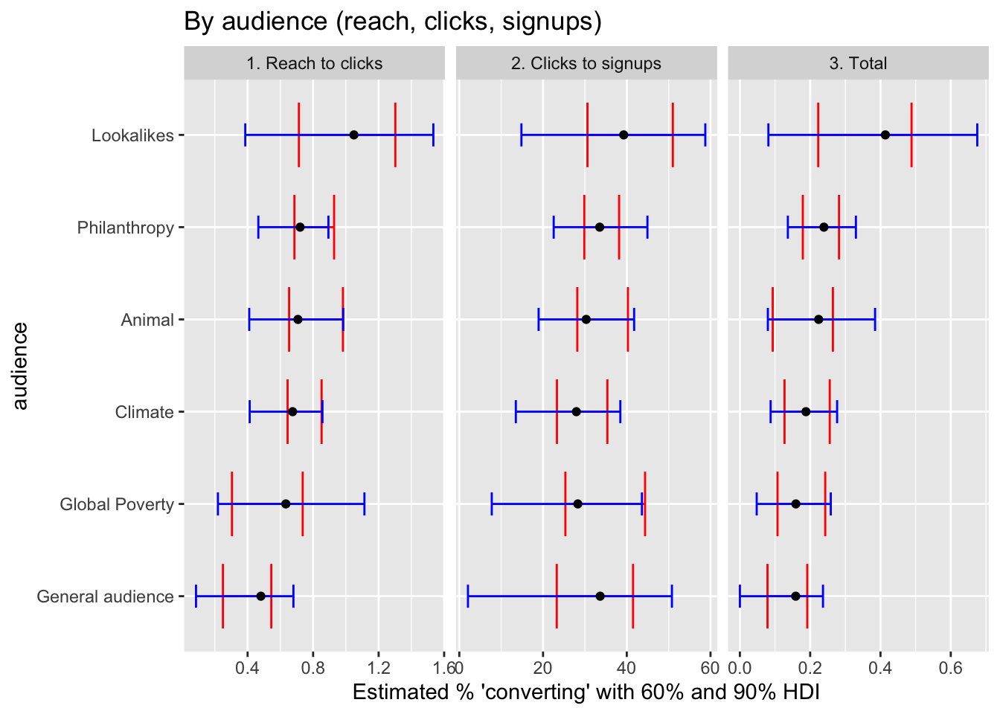
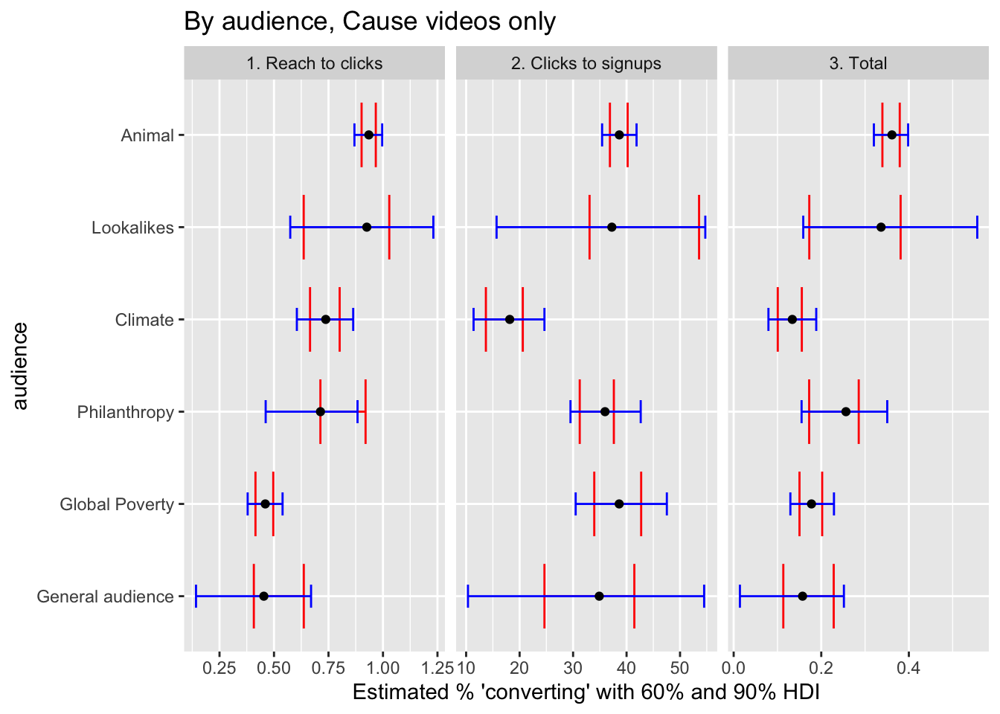

Context: Facebook advertisements on a range of audiences
Effective Giving Guide Lead Generation campaign … ran late November 2021 - January 2022. The objective of this campaign was to see whether a factual [‘who researches giving’ or ‘magnitude of impact differences’] or cause-led approach was more cost-effective at getting people to fill out a form and give us their email in order to download our Effective Giving Guide.
Bigger difference next year: Want to make a bigger difference next year? Start with our Effective Giving Guide and learn how to make a remarkable impact just by carefully choosing the charities you give to.
100x impact: Did you know that the best charities can have a 100x greater impact? Download our free Effective Giving Guide for the best tips on doing the most good this holiday season.
6000 people: Giving What We Can has helped 6,000+ people make a bigger impact on the causes they care about most. Download our free guide and learn how you can do the same.
Cause list: Whether we’re moved by animal welfare, the climate crisis, or worldwide humanitarian efforts, our community is united by one thing: making the biggest impact we can. Make a bigger difference in the world through charitable giving. Start by downloading our Effective Giving Guide. You’ll learn how to approach charity research and smart giving. And be sure to share it with others who care about making a greater impact on the causes closest to their hearts.
Learn: Use our free guide to learn how to make a bigger impact on the causes you care about most.
Only 3% research: Only 3% of donors give based on charity effectiveness yet the best charities can be 100x more impactful. That’s incredible! Check out the Effective Giving Guide 2021. It’ll help you find the most impactful charities across a range of causes.
Overwhelming: It can be overwhelming with so many problems in the world. Fortunately, we can do a lot to help, if we give effectively. Check out the Effective Giving Guide 2021. It’ll help you find the most impactful charities across a range of causes.
Check against data export of texts
Giving What We Can has helped 6,000+ people make a bigger impact on the causes they care about most. Download our free guide and learn how you can do the same., It can be overwhelming with so many problems in the world. Fortunately, we can do a lot to help, if we give effectively.
Check out the Effective Giving Guide 2021. It’ll help you find the most impactful charities across a range of causes., Use our free guide to learn how to make a bigger impact on the causes you care about most., Want to make a bigger difference next year? Start with our Effective Giving Guide and learn how to make a remarkable impact just by carefully choosing the charities you give to., Whether we’re moved by animal welfare, the climate crisis, or worldwide humanitarian efforts, our community is united by one thing: making the biggest impact we can.
Make a bigger difference in the world through charitable giving. Start by downloading our Effective Giving Guide. You’ll learn how to approach charity research and smart giving. And be sure to share it with others who care about making a greater impact on the causes closest to their hearts., Did you know that the best charities can have a 100x greater impact? Download our free Effective Giving Guide for the best tips on doing the most good this holiday season., Only 3% of donors give based on charity effectiveness yet the best charities can be 100x more impactful. That’s incredible!
Check out the Effective Giving Guide 2021. It’ll help you find the most impactful charities across a range of causes.
The Video ads theme and content
“Facts”
Charity research facts short video (8 seconds): Only 3% of donors research charity effectiveness, yet the best charities can 100x your impact, learn how to give effectively
Charity research facts long video (22 seconds): Trivial things we search (shows someone searching how to do Gangnam style), things we should research (shows someone searching how to donate effectively), only 3% of donors research charity effectiveness, yet the best charities can 100x your impact, learn how to give effectively. Slower paced music compared to the short video and cause videos.
“Cause focus”
Climate change (15 seconds): Care about climate change? You don’t have to renounce all your possessions, But you could give to effective environmental charities, Learn how to maximize your charitable impact, Download the Effective Giving Guide
Animal welfare (16 seconds): Care about animals? You don’t have to adopt 100 cats, But you could give to effective animal charities, Learn how to maximize your charitable impact, Download the Effective Giving Guide
Poverty (16 seconds): Want to help reduce global poverty? You don’t have to build a village, But you could give to effective global development charities, Learn how to maximize your charitable impact, Download the Effective Giving Guide
Arguments, rich content from “Brand Video”
Brand Video (1 min 22 seconds): Animated and voiceover video that explains how GWWC can help maximize charitable impact (support, community, and information) and the problems GWWC addresses (good intentions don’t always produce the desired outcomes, there are millions of charities that have varying degrees of impact and some can even cause harm). CTA: Check out givingwhatwecan.org to learn how you can become an effective giver.
Further detail, links
Notes from the trial description
“In the original version of our test, we had 1 video for the factual appeal and 3 videos for the cause led approach - 1 for global health and development, 1 for animal welfare and 1 for climate change.”
“We targeted our ads to audiences we thought were likely to engage based on their interests and demographics, and targeted the cause led videos to a relevant audience, i.e. climate change message to climate change audience.”
“We also had various text above the videos that were displayed and optimized.”
The treatment assignment was determined by Facebook’s algorithm. Video content was manipulated across three split tests.
Test 1 (Nov 30, 2021 – Dec 8, 2021, campaigns: “Cause-Led” and “Factual”) displayed either the long factual video or a cause focus video. In the cause focus condition, cause-specific audiences for animal rights, climate change, and poverty (based on their behavior on Facebook) were shown the relevant cause video.
Test 2 (Starting December 8, campaign “Factual V2”?) was the same as Test 1 but used the short factual video instead of the cause-focus videos.
Test 3 (Starting December 23, campaign “Cause-led V3” and “Factual V3” (?)): was the same as Test 2 but had a new version of the videos (with Luke just holding up signs with the words). This test was also restricted to 18-35 (or 18-44) year olds.1
Test 4: (Starting December 23, “Brand Video” and “PPCo”) The Brand Video was displayed in a separate campaign which was tested against another campaign that allowed the algorithm to optimize between the ‘short factual’ and ‘cause focus’ videos (although not allowing each cause-specific audience to see the ads for other cause areas).
In all tests, the text content displayed above the video was determined by Facebook’s algorithm. Balance across variations was determined to equate budgets across split tests; otherwise, according to Facebook’s algorithm. All variation was done at the level of the impression.
The videos were adapted across the trials as we learned. First, we updated the factual video to be shorter for Trial 2, and then we tried videos of Luke holding up signs spelling out the voiceover in Trial 3 for all videos.
We import the exported ‘pivot table’ gg_campaign_by_ad_by_text below, as well as the more detailed version, broken down by age range and gender: gg-campaign-by-ad-set-text-age-gender.csv.2
Data structure
The data frame gg_campaign_by_ad_by_text_age_gender has one row per combination of ‘campaign, ad, text, age group, gender’.
Each row represents a combination of the below (with different numbers of ‘reach’ for each row)3
campaign_name: When and and with what funds the ad was launched, I think (?)
ad_set: An ad set can specifically tie an ad_name to an audience (I think)
ad_name: Which video/media (or collection of optimized videos/media) was shown; note this is paired with ‘which audience’ in it’s label, as there were specific ‘global poverty’, ‘animal welfare’, ‘climate change’, ‘philanthropy’ and ‘retargeting’ audiences
Caveat: The ad_name seems to select from a different set of media for optimization depending on which ad_set it is in.4
text: Which text was shown along with the video
age (a range of ages)
gender (female, male, unknown)
Code
raw_data_path <-list("gwwc", "gg_raw_data_shareable")#already input above: gg_campaign_by_ad_by_text#Version allowing demographic breakdown:gg_campaign_by_ad_by_text_age_gender <-read_csv(here(raw_data_path, "gg-campaign-by-ad-set-text-age-gender.csv"), show_col_types=FALSE) %>%#dplyr::select(-"Campaign name...4") %>% #duplicate columns?mini_clean()#Version with information on cause videos shown (even to those in 'general' groups):gg_video_breakdowns <-read_csv(here(raw_data_path, "gg-image-video-breakdowns.csv"), show_col_types=FALSE)#capture and remove columns that are the same everywhereattribution_setting_c <- gg_campaign_by_ad_by_text_age_gender$attribution_setting %>% .[1]reporting_starts_c <- gg_campaign_by_ad_by_text_age_gender$reporting_starts %>% .[1]reporting_ends_c <- gg_campaign_by_ad_by_text_age_gender$reporting_ends %>% .[1]gg_campaign_by_ad_by_text_age_gender %<>%mini_clean()gg_video_breakdowns %<>%mini_clean()#functions to clean these specific data sets 'gg_campaign_by_ad_by_text_age_gender' and 'gg_campaign_by_ad_by_text':source(here("gwwc", "giving_guides", "clean_gg_raw_data.R"))#Many cleaning steps: audience, video_theme, campaign_theme, agetrin; relevelinggg_campaign_by_ad_by_text_age_gender %<>%rename_gg() %>%gg_make_cols() %>%text_clean() %>%# Shorter 'text treatment' column dplyr::select(campaign_name, everything(), -campaign_name_1, -campaign_name_7) #campaign_name_7 was the same as campaign_name_1gg_video_breakdowns %<>%rename_gg() %>%gg_make_cols()#gg_campaign_by_ad_by_text_age_gender %>% collapse::descr()
cleaned_data_path <-list("gwwc", "gg_processed_data")#export 'cleaned' data for others to play with immediatelywrite.csv(gg_video_breakdowns, here(cleaned_data_path, "gg_video_breakdowns.csv"), row.names =FALSE)write.csv(gg_campaign_by_ad_by_text_age_gender, here(cleaned_data_path, "gg_campaign_by_ad_by_text_age_gender.csv"), row.names =FALSE)write_rds(gg_video_breakdowns, here(cleaned_data_path, "gg_video_breakdowns.Rdata"))write_rds(gg_campaign_by_ad_by_text_age_gender, here(cleaned_data_path, "gg_campaign_by_ad_by_text_age_gender.Rdata"))
This data should be publicly shareable; above, we ‘export’
This data is clearly not identifying individuals; it involves aggregates based on real or assumed characteristics … there is likely nothing that needs to be hidden here. We aim to share and integrate all the data in this repo, for a complete pipeline.
In the code above, we create several ‘cleaned data’ files for others to access in the Github repo
Previous version of data used … (moved)
We previously used data collapsed (breakdowns) by demography and ad set, into 2 files, which duplicated rows to represent the number of people reached: video breakdown, and text breakdown.csv. We now use the more ‘raw’ minimal version of the data, avoiding duplicating rows where possible.
Below, we also input some of the ‘old version’ of the data, with the duplicated rows, to accommodate the old-format of analysis … this will be removed when we switch over. The code above inputs and builds 2-4 related data frames (tibbles), which were constructed from the collapsed (aggregated) data by multiplying rows according to observation counts. I am not sure where this was done. Once we update the rest we will get rid of this. …
e.g.,
gwwc_vid_results: Observations of emails provided… by video content
This content/input has been moved to eamt_data_analysis/gwwc/giving_guides/archive_erin/erin_plots_stats_gg.qmd, at least for now
1.4 Descriptives
1.4.1 Implemented treatments, ‘reach’
First we illustrate ‘where, when, and to whom’ the different campaigns and treatments were shown (‘people reached’ on Facebook).
We use ‘reach’ as our metric throughout’; essentially ‘unique impressions’
According to Facebook (https://business.facebook.com/adsmanager/ accessed 5 Aug 2022), reach is:
The number of people who saw your ads at least once. Reach is different from impressions, which may include multiple views of your ads by the same people.
In all of our figures below we use the reach outcome rather than the ‘impressions’ outcome, although we sometimes refer to it as ‘impressions’, because it is a clearer way of describing it.
The sequential campaigns involved different sets of videos.
Some audiences were profiled as being associated with a certain cause (through their Facebook interests or activities): in ‘cause-focused’ campaigns they were shown videos for their profiled cause. In campaigns that were not cause-focused, they were shown general interest videos. However, those associated with one cause were never shown videos for other causes.
Audiences not associated with a cause included the ‘General’ audience, the Philanthropy (interested in charity) audience, a GWWC ‘Lookalike’ audience, and a Retargeted audience: these audiences were shown either the more general-interest videos or particular cause videos.5 This is illustrated in the table below.
Video themes by audience: share of unique impressions
video_theme
Animal
Climate
Global Poverty
General audience
Lookalikes
Philanthropy
Retargeting
Total
Animal
9.77%
0.00%
0.00%
1.35%
1.31%
10.02%
0.01%
22.47%
Climate
0.00%
1.80%
0.00%
0.98%
0.45%
1.88%
0.01%
5.12%
Poverty
0.00%
0.00%
3.04%
0.18%
2.66%
9.26%
0.00%
15.15%
Factual short
11.84%
12.53%
4.88%
2.11%
4.73%
8.19%
0.01%
44.29%
Factual long
1.22%
1.19%
0.64%
0.00%
0.08%
0.88%
0.00%
4.00%
Total
23.78%
17.78%
9.60%
7.30%
9.39%
32.11%
0.04%
100.00%
NA
0.95%
2.26%
1.05%
2.67%
0.16%
1.88%
0.01%
8.97%
Below (in fold), we see that the second treatment dimension – the text presented along with the video – was allowed to vary independently of the video (but these are not ‘statistically independent’).
Video themes by text treatment: unique impressions
video_theme
100x impact
6000+ people
Bigger difference
Cause list
Learn
Only 3% research
Overwhelming
Total
Animal
0.00%
2.13%
3.36%
1.08%
1.26%
0.00%
1.18%
9.01%
Climate
0.00%
0.04%
0.05%
0.04%
0.13%
0.00%
0.05%
0.31%
Poverty
0.00%
0.40%
0.83%
1.01%
0.37%
0.00%
0.32%
2.92%
Cause-led (any)
4.66%
8.59%
5.94%
3.49%
6.79%
3.39%
7.19%
40.04%
Factual short
9.51%
5.39%
7.37%
0.00%
4.73%
6.64%
0.00%
33.65%
Factual long
0.61%
0.83%
0.94%
0.00%
1.28%
0.68%
0.00%
4.34%
Total
17.47%
18.81%
20.19%
5.62%
16.15%
13.04%
8.74%
100.00%
NA
2.69%
1.43%
1.71%
0.00%
1.59%
2.32%
0.00%
9.73%
Note (again) that we cannot identify all of the video treatments in the same dataset with text treatments; thus, some are characterized as ‘cause-led (any)’. This is a limitation of the Facebook interface.
Note that treatment shares are not equal. In fact, as the first table in this sectionshows, they are not even equal within each campaign. This is because Facebook optimizes to show more succesful videos and text more than less succesful versions.6
As shown in the fold below, the set of text treatments varied across campaigns:
Text treatments by campaign
Below, we present the text treatments as shares of each campaign’s unique impressions. We see that the text treatments varied as shares of the treatments in each campaign. Some texts were swapped for other texts in later campaigns. But even among campaigns that used the same overall set of texts, there was some dramatic variation E.g., the ‘100x impact’ was favored heavily in the ‘Factual V2’ campaign, while the other ‘Factual’ campaigns used this much less frequently. This presumably resulted from it performing better in the earliest hours of the Factual V2 trial, and Facebook’s algorithm thus favoring it.
Text treatments as shares of unique impressions by campaign
campaign_name
100x impact
6000+ people
Bigger difference
Cause list
Learn
Only 3% research
Overwhelming
Total
Cause-led
0.00%
24.99%
27.61%
15.45%
13.15%
0.00%
18.79%
100.00%
Cause-led V3
0.00%
23.91%
11.08%
16.76%
15.88%
0.00%
32.36%
100.00%
Factual
14.05%
19.08%
21.65%
0.00%
29.49%
15.73%
0.00%
100.00%
Factual V2
28.16%
10.41%
21.63%
0.00%
11.88%
27.93%
0.00%
100.00%
Factual V3
28.37%
21.14%
22.14%
0.00%
16.04%
12.31%
0.00%
100.00%
Hypercube Brand Video
27.61%
14.65%
17.55%
0.00%
16.37%
23.82%
0.00%
100.00%
PPCo Creatives
26.94%
14.95%
18.16%
0.00%
20.34%
19.61%
0.00%
100.00%
1.4.2 Demographics
Code
( reach_age_gender <- gg_campaign_by_ad_by_text_age_gender %>% dplyr::select(age, gender, reach) %>%uncount(weights = .$reach) %>% dplyr::select(-reach) %>%tabyl(age, gender) %>%adorn_opts() %>%.kable(caption ="Unique impressions: shares by Age and Gender", digits=2) %>%.kable_styling())
Unique impressions: shares by Age and Gender
age
female
male
unknown
Total
13-17
0.03%
0.02%
0.01%
0.05%
18-24
13.02%
5.78%
0.63%
19.43%
25-34
27.50%
9.32%
0.68%
37.50%
35-44
15.71%
4.27%
0.47%
20.45%
45-54
5.21%
0.95%
0.15%
6.30%
55-64
6.42%
1.26%
0.16%
7.84%
65+
6.44%
1.78%
0.20%
8.42%
Total
74.32%
23.39%
2.29%
100.00%
As can be clearly seen above, within all age groups, the ads were disproportionally shown to women. Relative to the overall Facebook population our data skews very slightly younger.7
1.4.3 Outcomes
Below, we present the dates of each campaign, along with start dates and results:
Code
base_results_sum <-function(df) { df %>% dplyr::summarize(Cost =sum(round(amount_spent_usd,0)),`reach`=sum(reach),`Link clicks`=sum(link_clicks, na.rm =TRUE),Results=sum(results, na.rm =TRUE),`$/ impr.`=round(Cost/reach,3),`$/ click`=round(Cost/`Link clicks`,1),`$/ result`=round(Cost/Results,1),`Results/ 1k impr.`=round(Results*1000/reach,1)) }( campaign_date_outcomes <- gg_campaign_by_ad_by_text_age_gender %>%group_by(campaign_name, starts, ends) %>%rename('Campaign'= campaign_name) %>%filter(reach>200) %>% base_results_sum %>%arrange(starts) %>%.kable(caption ="Results by Campaign and start date") %>%.kable_styling() %>%add_footnote("'False start' campaign dates with less than 200 reach are excluded"))
Results by Campaign and start date
Campaign
starts
ends
Cost
reach
Link clicks
Results
$/ impr.
$/ click
$/ result
Results/ 1k impr.
Cause-led
2021-11-30
2021-12-20
4,451
113,399
1,111
407
0.039
4.0
10.9
3.6
Factual
2021-11-30
2021-12-08
484
10,752
94
19
0.045
5.1
25.5
1.8
Factual V2
2021-12-08
2021-12-20
3,401
94,168
1,362
417
0.036
2.5
8.2
4.4
Cause-led V3
2021-12-23
2022-01-04
1,422
101,892
408
164
0.014
3.5
8.7
1.6
Factual V3
2021-12-23
2022-01-04
1,415
112,041
496
174
0.013
2.9
8.1
1.6
Hypercube Brand Video
2022-01-07
2022-01-17
1,022
51,911
206
65
0.020
5.0
15.7
1.3
PPCo Creatives
2022-01-07
2022-01-17
1,027
79,241
327
106
0.013
3.1
9.7
1.3
PPCo Creatives
2022-01-07
2022-01-18
366
24,106
96
30
0.015
3.8
12.2
1.2
a 'False start' campaign dates with less than 200 reach are excluded
The results vary substantially by campaign, but this could be attributed to a range of factors, including different sets of videos and texts in each campaign, different versions of videos presented on these dates, and changes in audience filters. As these campaigns were administered on different dates, there may also be uncontrolled differences in the population seeing our ads.
Most comparable trials and A/B testing
The campaigns run on the same dates are the most comparable, and in some cases, were explicitly set up as A/B tests.
A/B trial setups
Test 1 (Nov 30, 2021 – Dec 8, 2021) displayed either the long factual video or a cause focus video. In the cause focus condition, cause-specific audiences for animal rights, climate change, and poverty (based on their behavior on Facebook) were shown the relevant cause video.
(Note: the ‘Only 3% research’ and ‘100x impact’ messages were not shown )
Test 2 (Dec 8 - 20, 2021) was the same as Test 1 but used the short factual video instead of the cause-focus videos.
Test 3 (Dec 23, 2021 - Jan 4, 2022) was the same as Test 2 but had a new version of the videos (with Luke just holding up signs with the words). This test was also restricted to 18-35 year olds.
Test 4: The brand video was displayed in a separate “brand video” campaign which was tested against another campaign that allowed the algorithm to optimize between the short factual and cause-focus videos (although not allowing each cause-specific audience to see the ads for other cause areas).
As noted, some campaigns were set up explicitly as A/B trials. Below, we focus specifically on the comparable groups in each.
The table above is limited to the campaigns starting on or before 2021-12-08: the ‘tests 1 and 2’. It is limited to Philanthropy and Lookalike audiences, the only audiences that saw all videos. It is limited to text (message) treatments that were shown across all these campaigns (“6000+ people”, “Bigger difference”, and “Learn”). Note the extremely poor performance of the ‘Factual long’ message. The Factual short message slightly outperformed the Cause-led messages overall.8 The Lookalike audience somewhat overperformed the Philanthropy audience, particularly with the cause-led videos.
Next we consider “Test 3”, starting on 2021-12-23. As noted, this had a new version of the videos, and new age restrictions
This has the same filters as the previous table: only Philanthropy and Lookalike audiences9 and only those text treatments shown to all. Here both audiences, and both sets of message perform roughtly the same on a results-per-cost basis.
Finally, for test 4, considering the branded video versus the rest. Here all text treatments could be paired with each of the videos, and each were given to each audience. Thus, we can ‘include a lot’ and this table is large (thus the ‘datatables’ format).10
For the Philanthropy audience, the Climate and Poverty videos and the Factual Short videos did about equally well – about 8-9 USD per result. The Branded video did slightly worse. The Animal video which performed very poorly on this audience!
For the General audience, the Climate video did best, achieving a result at close to 6 dollars. The Animal and Factual videos did somewhat worse, and the Poverty and Hypercube videos did substantially worse on a results per cost basis.
The cost per result for the Factual Short video was fairly constant across audiences. The Branded video performed so/so on the Lookalikes and Philanthropy audeinces, but extremely poorly on the General and cause audiences.
Cause videos:
Animals: did approximately equally well (about 2 results per 1k impressions and 9-11 dollars per result) on all audiences except the Philanthropy audience.
Climate: Surprisingly poor performance for the climate audience (but performed well with theGeneral audience, and OK with the Philanthropy and Lookalike audiences
Poverty: This video apparently had poor performance overall, leading FB’s algorithm to largely drop it. It seems to have not appealed to any audience except the Philanthropy audience, where it did marginally OK.
Other ‘outcome by group’ comparisons
Next, we show the results by age and gender. As our age filters changed over time, we do this first for the earlier trials, when all age groups were included.
Code
( age_outcomes_pre_12_09 <- gg_campaign_by_ad_by_text_age_gender %>%group_by(age) %>%filter(reach>500, starts<="2021-12-08") %>%base_results_sum() %>%.kable(caption ="Results by Age: Campaigns starting on or before Dec 8 2021") %>%.kable_styling())
Results by Age: Campaigns starting on or before Dec 8 2021
age
Cost
reach
Link clicks
Results
$/ impr.
$/ click
$/ result
Results/ 1k impr.
18-24
275
14,690
48
20
0.019
5.7
13.8
1.4
25-34
585
26,970
162
75
0.022
3.6
7.8
2.8
35-44
625
22,876
156
64
0.027
4.0
9.8
2.8
45-54
970
25,525
246
98
0.038
3.9
9.9
3.8
55-64
1,625
36,157
475
150
0.045
3.4
10.8
4.1
65+
2,758
43,547
1,097
319
0.063
2.5
8.6
7.3
While 11 older age groups yield more results per impression, they are also more expensive. This approximately balances out, although the age 18-24 group is particularly costly per result!
In later trials we only targeted the younger age groups; the cost per results were similar to earlier trials , and fairly close among the younger age groups (see fold).
By age, later trials
Code
( age_outcomes_post_12_09 <- gg_campaign_by_ad_by_text_age_gender %>%group_by(age) %>%filter(reach>500, starts >"2021-12-08") %>%base_results_sum() %>%.kable(caption ="Results by Age: Campaigns starting on or after Dec 23 2021") %>%.kable_styling())
Results by Age: Campaigns starting on or after Dec 23 2021
age
Cost
reach
Link clicks
Results
$/ impr.
$/ click
$/ result
Results/ 1k impr.
18-24
802
67,114
221
87
0.012
3.6
9.2
1.3
25-34
2,505
175,595
754
270
0.014
3.3
9.3
1.5
35-44
1,016
63,882
315
108
0.016
3.2
9.4
1.7
Note on change in table style
The tables above make it clear how the relevant ‘per dollar’ and ’per unique impression results are calculated. In the following tables we present slightly fewer columns, for readability.
Women gave their emails at a somewhat higher rate overall, but their (unique) impressions were a bit more costly. Thus cost per result roughly balanced out. Nonetheless, this might be somewhat informative for other contexts; women might be a particularly promising audience, all else equal.
The Climate video performed particularly well on the philanthropy-interested audience filter, while Factual long performed the worst.12
Next, we compare the text treatments for the later campaigns only. The earlier and later campaigns had a slightly different set of texts; combining across these indeed risks confounding multiple dimensions.
Code
outcomes_by_text <- gg_campaign_by_ad_by_text_age_gender %>%filter(str_det(campaign_name, "factual|hyper")) %>%group_by(text_treat) %>%base_results_sum() outcomes_by_text %>% dplyr::select(-Cost, -`Results`, -`Link clicks`) %>%.kable(caption ="Results by text; later campaigns") %>%.kable_styling()
The “Only 3% research” message performed particularly well on a cost-per-result basis, while 6000+ people performed the worst
We next consider results by audience, focusing on non-cause treatments for comparability.
Code
audience_outcomes <- gg_video_breakdowns %>%group_by(audience) %>%filter(str_det(video_theme, "Factual|factual")) %>% base_results_sumaudience_outcomes %>% DT::datatable(caption ="Results by audience for non-cause videos")
Above, we look at the performance of different audiences. As cause-specific audiences tend to be presented particular cause videos, we focus only on non-cause-related videos here for greater comparability across audiences.
Format note
The final table above is presented with the Datatables package/function. This allows sorting, filtering, etc. We can present more tables in this format if it is preferable.
1.5 Modeling and simulation
Discussion moved to separate file modeling_fb_discussion.qmd
1.6 Modeling: Bayesian Logistic regressions and CIs
sum_results <-function(df) { df %>%summarise(results =sum(results, na.rm =TRUE),spend =sum(amount_spent_usd, na.rm =TRUE),clicks =sum(link_clicks, na.rm =TRUE),impressions =sum(impressions, na.rm =TRUE),reach =sum(reach, na.rm =TRUE) )}# collapse into the categories of interestgg_video_breakdowns_col <- gg_video_breakdowns %>%group_by(video_theme, audience) %>%#group_by(video_theme, audience, starts) %>%sum_results#%>% mutate(starts = as.factor(starts))#rem: we are just summing outcomes, so no weights are needed heregg_video_breakdowns_col_mix <- gg_video_breakdowns %>%group_by(video_theme, audience, starts) %>%#group_by(video_theme, audience, starts) %>%sum_results#%>% mutate(starts = as.factor(starts))#rem: we are just summing outcomes, so no weights are needed here
In the chunk below, we compute and set minimally informative priors for the click rates model.
Code
#helper function to 'make priors'make_prior_normal <-function(mean, sd, ...) {prior_string(paste0("normal(", mean, ",", sd, ")"), ...)}prior_click_per_reach <-0.028prior_intercept_click <-logit(prior_click_per_reach)prior_intercept_click_ub <-0.15se_prior_click <- (logit(prior_intercept_click_ub) - prior_intercept_click)/1.96prior_slope_click_ub <-0.25se_prior_slope_click <- (logit(prior_slope_click_ub) - prior_intercept_click)/1.96prior_click <-c(make_prior_normal(prior_intercept_click, se_prior_click, class ="Intercept"),make_prior_normal(0, se_prior_slope_click, class ="b"))#DR @Jamie: This is a log ratio of probabilities, iirc. Why are we assuming it is normally distributed?
Determining appropriate priors for click rates - intercept
In the code chunk just above, we define the priors which we use below.
Where did this come from? It is somewhat casual, but given the very large dataset, we don’t expect our results to be very sensitive to the priors.
A 0.028 click rate (as a share of ‘reach’) seemed like a reasonable mean. This is approximately the rate GWWC saw in all of its trials before February 2021, when this trial started. logit(prior_click_per_reach) gives us the intercept associated with this prior expected outcome rate.
The prior on the standard error for the intercept is not based on prior data. We considered ‘what baseline rate would we consider to be extremely unlikely?’, and set the standard deviations to be about half of this (recalling that 95% of the area of a normal distribution is within 1.96 sd’s of the mean) . In the positive direction, a rate of 15% or more would be truly shocking. This would yield a logit intercept of logit(prior_intercept_click_ub) = -1.7346011. Differencing this from the prior mean and dividing by two yields our chosen prior intercept standard error: 0.925; note this gives a 95 percent lower-bound of a 0.468% click rate.
Determining appropriate priors for click rates - coefficients
In determining priors for the slopes (adjustments for different groups), we start with a mean expected slope of 0; this is consistent with a sort of ‘unbiased’ prior, not loading the dice in either direction, and also most adaptable to a range of groups we might consider. We again considered ‘what mean click rates would be very surprising’. A click rate of 25% of more for any targeted subgroup or treatment would be very unexpected – this seems conservative. By similar calculations above, this yields se_prior_slope_click = 1.2492546.
Could we instead do this considering reasonable ‘proportional differences in rates’? We will consider this for future work (possible challenge: it may interact with the intercepts).
In the chunk below, we compute and set minimally informative priors for the results model. Again, some notes follow.
Code
prior_results_per_click <-0.20prior_intercept_results <-logit(prior_results_per_click)prior_intercept_results_ub <-0.75se_prior_results <- (logit(prior_intercept_results_ub) - prior_intercept_results)/1.96prior_slope_results_ub <-0.85se_prior_slope_results <- (logit(prior_slope_results_ub) - prior_intercept_results)/1.96prior_results <-c(make_prior_normal(prior_intercept_results, se_prior_results, class ="Intercept"),make_prior_normal(0, se_prior_slope_results, class ="b"))
Determining appropriate priors for results (per click)
See the above discussion folds on priors for clicks for our general approach.
For results per click (RpC), we had very little data or experience to go on. The little prior data GWWC had on results per click were from very different contexts, e.g., RSVPs for attending events rather than simply leaving an email. In those cases results per click are (as we expect, are results per click for Facebook ads are in general). However, here people are clicking on a call to action like ‘Download the Effective Giving Guide’, directing them to a site where they merely need to leave their email to download this guide. Thus, if the clicks are intentional, a much higher rate of ‘result’ seems reasonable. Thus we compromised on a 20% ‘results per click’ rate as our overall prior mean.
We would be ‘very surprised’ (seems 5% likely or less) with an RpC of over 75% overall or 85% for any subgroup – we derive the standard errors of the intercept and slope from these, as for clicks.
(Note: this implies a 95% CI lower-bound of a 2.04% overall RpC rate.)
Running MCMC with 4 parallel chains, with 8 thread(s) per chain...
Chain 3 finished in 23.4 seconds.
Chain 2 finished in 24.5 seconds.
Chain 1 finished in 26.7 seconds.
Chain 4 finished in 37.2 seconds.
All 4 chains finished successfully.
Mean chain execution time: 28.0 seconds.
Total execution time: 37.3 seconds.
Code
# rpi_logit_mix_vid <- do.call("brm", c(list(# data = gg_video_breakdowns_col_mix, # formula = results_per_reach_video_aud_mix,# family = binomial("logit"),# control = list(adapt_delta = 0.99, max_treedepth = 15),# prior = prior_results),# arg.list, # list(threads = threading(8)))# )
1.6.2 (To do) Summarize the model results/coefficients in clean tables here
1.6.3 Forest plots
Code
# posterior expectations:full_crossing <-expand_grid("video_theme"=unique(gg_video_breakdowns_col$video_theme),"audience"=unique(gg_video_breakdowns_col$audience)) %>%mutate(reach =1, #it is estimating the number of clicks based on the reachclicks =1) %>%filter(!(audience=="Animal"& (video_theme =="Climate"| video_theme =="Poverty"))) %>%filter(!(audience=="Climate"& (video_theme =="Animal"| video_theme =="Poverty"))) %>%filter(!(audience=="Global Poverty"& (video_theme =="Animal"| video_theme =="Climate"))) #remove combinations where we don't have data ... at least for now# setting reach and clicks = 1 will give us proportion of conversions (because it makes a prediction for total outcomes per unit )click_post <-posterior_epred(clicks_logit_vid, newdata = full_crossing) #ndraws = 1000, results_post <-posterior_epred(results_logit_vid, full_crossing)combined_post <- click_post * results_post #DR: multiplying the predicted probabilities of click and conversion here?
Code
#make tibbles of the stuff above, put it together spost_tib_clean <-function(df, name) { data <- df %>%as.tibble() %>%pivot_longer(cols =everything(),names_to ="identifier",values_to ="probability") data <- data %>%mutate(level = name,theme =rep(full_crossing$video_theme, dim(data)[1]/dim(full_crossing)[1]),audience =rep(full_crossing$audience, dim(data)[1]/dim(full_crossing)[1])# starts = rep(full_crossing$starts, 1000) #DR: I think I want starts (start date as a factor) in the model, because the audience may be systematically different on those days, and other things change we leave out here. However, I don't want to see it in the graphs. How to do that? )return(data)}# make tibblestib_click_post <- click_post %>%post_tib_clean( "1. Reach to clicks")tib_result_post <- results_post %>%post_tib_clean("2. Clicks to signups")tib_combined_post <- combined_post %>%post_tib_clean("3. Total") full_post <-bind_rows(tib_click_post, tib_result_post, tib_combined_post)
We ran two Bayesian Logit models, presented above. Results come out of a two-stage process: some people who see the ad click on it. Some of those who click on the ad leave their email (asking for a Giving Guide). We model clicks as a share of unique impressions (‘reach’) and results as a share of clicks, allowing each to vary by video theme and by audience. (Later: by text and by demographics.) The product of these shares (probabilities) yields results as a share of impressions, the main outcome of interest.
Below, we plot the point means (aka ‘coefficients’) and ‘highest density intervals’ (HDI) of our posterior beliefs for these. These models consider the audience and video themes at the same time, the imbalance between audiences and themes should probably not be a major biasing factor.
Caveats:
The coefficients for the second stage (‘clicks to results’) should be taken lightly; as the audiences may be selected very different ‘conditional on click’; e.g., audiences that are ‘easy to click’ may by ‘harder to convert ot a result’.
The results presented below do not control for ‘which text treatment’ nor for ‘which campaign’. (We can do the latter next, but we can only do the former with the other version of the data, which is then missing some detail on who saw which video)
aud_plots <-function(df) { df %>%filter(audience!="Retargeting") %>%group_by(level, audience) %>%#, starts sum_mean_hdi %>%mutate(audience =reorder(as.factor(audience), `mean`)) %>%ggplot() +geom_errorbarh(aes(xmin = lower_n, xmax = upper_n, y = audience), height = .7, color ="red") +geom_errorbarh(aes(xmin = lower_w, xmax = upper_w, y = audience), height=.25, color ="blue") +geom_point(aes(x=`mean`, y = audience)) } (reach_to_clicks_aud_plot <- full_post %>%aud_plots() +labs(title ="By audience (reach, clicks, signups)",x ="Estimated % 'converting' with 60% and 90% HDI") +facet_grid(~level, scales ="free"))

Code
(reach_to_clicks_aud_plot_no_cause <- full_post %>%filter(!str_det(theme, "Animal|Climate|Poverty")) %>%aud_plots() +labs(title ="By audience, no cause videos",x ="Estimated % 'converting' with 60% and 90% HDI") +facet_grid(~level, scales ="free"))
Code
(reach_to_clicks_aud_plot_cause <- full_post %>%filter(str_det(theme, "Animal|Climate|Poverty")) %>%aud_plots() +labs(title ="By audience, Cause videos only",x ="Estimated % 'converting' with 60% and 90% HDI") +facet_grid(~level, scales ="free"))

Note
Note: the ‘pooled’ graphs in this section may not be correctly weighted across subcategories. We need to reexamine this.
For the ‘cause videos only’ we see 14 that the philanthropy audience, across all causes, seems to perform at least as well as the climate and ‘global poverty’ audiences (when the latter are presented videos for the causes they are said to care about). However, the animal audiences seems to perform substantially better.
For example, focusing on climate-cause videos (and removing ‘lookalikes’) below, we see that the philanthropy audience performs substantially better than the climate audience.
(reach_to_clicks_plot <- full_post %>%filter(grepl("1", level)) %>%group_by(theme, audience) %>%#, starts sum_mean_hdi %>%mutate(theme =reorder(as.factor(theme), `mean`)) %>%filter(audience!="Retargeting") %>%ggplot() +geom_errorbarh(aes(xmin = lower_n, xmax = upper_n, y = theme), height = .7, color ="red") +geom_errorbarh(aes(xmin = lower_w, xmax = upper_w, y = theme), height=.25, color ="blue") +geom_point(aes(x = mean, y = theme)) +coord_cartesian(xlim=c(0, 1.75)) +facet_wrap(~audience, scales ="fixed") +labs(title ="Clicks by video theme and audience",x ="Estimated % clicking with 60% and 90% HDIs") +facet_wrap(~audience, scales ="fixed"))
Code
(reach_to_results_plot <- full_post %>%filter(grepl("3", level)) %>%group_by(theme, audience) %>%#, startslevel, sum_mean_hdi %>%mutate(theme =reorder(as.factor(theme), `mean`)) %>%filter(audience!="Retargeting") %>%ggplot() +geom_errorbarh(aes(xmin = lower_n, xmax = upper_n, y = theme), height = .7, color ="red") +geom_errorbarh(aes(xmin = lower_w, xmax = upper_w, y = theme), height=.25, color ="blue") +geom_point(aes(x = mean, y = theme)) +facet_wrap(~audience, scales ="fixed") +coord_cartesian(xlim=c(0, 0.8)) +labs(title ="Reach to results (total)",x ="Estimated % results with 60% and 90% HDIs") +facet_wrap(~factor(audience, levels=audience_levels), scales ="fixed"))
Code
(reach_to_results_plot_flip <- full_post %>%filter(grepl("3", level)) %>%group_by(audience, theme) %>%#, startslevel, sum_mean_hdi %>%mutate(audience =reorder(as.factor(audience), `mean`)) %>%filter(audience!="Retargeting") %>%ggplot() +geom_errorbarh(aes(xmin = lower_n, xmax = upper_n, y = audience), height = .7, color ="red") +geom_errorbarh(aes(xmin = lower_w, xmax = upper_w, y = audience), height=.25, color ="blue") +geom_point(aes(x = mean, y = audience)) +facet_wrap(~audience, scales ="fixed") +coord_cartesian(xlim=c(0, 0.8)) +labs(title ="Reach to results (total)",x ="Estimated % results with 60% and 90% HDIs") +facet_wrap(~theme, scales ="fixed"))
1.6.5 Outcomes by cost
Code
# Joining spending and conversion ####cost_tibble <-left_join(tib_combined_post,rename(gg_video_breakdowns_col, theme=video_theme)) %>%mutate(reach_per_dollar = reach / spend,sign_per_dollar = reach_per_dollar * probability,#NOTE this uses the simulated distribution of probabilities, not just averages! sign_per_100d =100*sign_per_dollar,cost_per_signup =1/sign_per_dollar ) %>%filter(is.na(spend) ==FALSE) cost_summary <- cost_tibble %>%group_by(theme, audience) %>%sum_mean_hdi(var= sign_per_100d, scaleme=1)#dim(filter(cost_summary, check > 2))[1] ... where HDI is not continuous, I guess... this doesn't happen here atm
# # ggplot(filter(cost_tibble, upper_eti < 100)) +# geom_errorbarh(aes(xmin = lower_eti, xmax = upper_eti, y = audience)) +# geom_point(aes(x = mean, y = audience)) +# labs(title = "Cost per signup ($)",# x = "Estimated cost per signup (USD) with 95% ETI") +# facet_wrap(~theme, scales = "free_x")
Above we consider the cost effectiveness of each video by audience.
‘Factual short’: 15 This video seems to perform as good or better than any other video for each of the cause audiences as well as for the Lookalike audience (but see cav eat). It performs nearly as good as other videos for the other audiences.
Climate video: This seems to have performed best for the Philanthropy and General audiences, although the distribution is diffuse. Surprisingly, it does not perform best for the climate audience.
Brand Video, Factual Long: These seemed to have performed worst or near-worst for most audiences. ‘Factual long’ seems to have clearly performed worse than ‘Factual short’ version. (But see caveat below.)
Caveat/todo – Video/campaign date imbalance
There is substantial imbalance in dates the administration of treatments in the pooled data. E.g., the ‘Factual short’ video was the only one shown for the 2021-12-08 trial, which may confound the above result. The Brand Video was only shown in a single trial, where it was the only video shown. The ‘Factual long’ video was dropped in later trials (?possibly after poor performance in an explicit A/B test?). Again, confounds are certainly possible. We may want to either remove trials from dates that only ran a single trial (at a first pass), or include start date/campaign into our modeling.
Code
( sign_per_100d_plot_aud_by_vid <- cost_tibble %>%filter(audience!="Retargeting"& audience!="General audience") %>%ggplot() +scale_x_continuous(limits =c(0, 20)) + ggridges::geom_density_ridges(aes(x = sign_per_100d, y = audience ) ) +geom_point(data = cost_summary %>%filter(audience!="Retargeting"& audience!="General audience"), aes(x = mean, y = audience)) +labs(title ="Signups per $100: Comparing audiences for each video",x ="Density plots, means") +facet_wrap(~theme, scales ="free_x"))
Flipping the previous plot, we compare the cost-effectiveness of each audience for each video.[Again hard-coding here…][Note that the audience-imbalance caveat still applies. We removed the ‘General Audience’ here, as this was only used for the final trial, and this seems particularly non-comparable.]
The Lookalike audiences are relatively cost-effective for most videos, although the Philanthropy audience seems to do better per dollar for the Climate video.
The cause audiences are relatively cost-effective for their ‘own’ videos, but not overwhelmingly so. They seemed particularly cost-ineffective for the Hypercube video.
1.7 Asking and answering questions
This dynamic document format allows us to ask and answer a series of questions
Using the data, with all coding steps shown
Ideally, following a pre-defined (pre-analysis) plan
Using the data and statistics directly and automatically in the narrative
And everything will be automatically adjusted if we bring in new data or adjust/correct features
In this context, how much does it cost to get a ’Result”, i.e., to get a person to give their email to receive a Giving Guide?
Which pre-defined audience yields a Result at the lowest cost? How does this cost vary by audience?
Do the message treatments ‘interact’ with the video treatments (i.e., are their synergies and better pairings)?
Do some videos lead to higher click rates?
Do some videos lead to higher watch rates?
We see ‘no individuals over 45’ in the data for all experiments starting after mid-December↩︎
We use the latter going forward as it subsumes the former; the former is just kept as a check.↩︎
However, for the Brand Video campaign these are further broken up; I am not sure how.↩︎
In particular, it seems that for the Giving Guide 2021 – PPCo Creatives the Emotional + Factual (Animated) draws from a different set of ads for (e.g.) Global Poverty + Lookalikes (18-39) versus Philanthropy + Lookalikes (18-39). I assume it draws from all causes for non-cause-linked audiences, but for the cause-linked audiences it draws only from the cause-of-interest, as well as the general ‘factual’ videos.↩︎
Unfortunately, for these groups, we cannot extract the data on which cause-specific video they saw in combination with certain other categories, like ‘which text’ or demographics. This breaks up our analysis a bit.↩︎
This also may lead FB to particularly combine certain message presentations more with certain video presentations. However we cannot check this in our current setup: it is confounded with ‘audience profile’ (at least in the data we can observe).↩︎
But we essentially excluded the 13-17 age group, completely excluding it in later.↩︎
But recall we cannot distinguish which cause message they were shown for this slice of the data.↩︎
Here we could have included the cause audiences and it would have been somewhat comparable, but we leave them out for simplicity↩︎
We can also use the data that includes information on the video all audiences saw here, because we don’t need to filter on message.↩︎
this text is ‘hard-coded’ on 4 Aug 2022 … if data changes we need to change the text↩︎
Tech note: the video names in the previous sentence are soft-coded, i.e., inline code; see the previous chunk where we identify the top_vid_phil and bot_vid_phil.↩︎
This comes from Jamie’s work in fb ad analysis.R↩︎
Check: is this the same as ‘which yields the highest rate of results, or is there a cost difference?’↩︎
Check: is this the same as ‘which yields the highest rate of results, or is there a cost difference?’↩︎
Source Code
---execute: freeze: auto # re-render only when source changes warning: false message: false error: true---# Giving What We Can: Giving guides {#gwwc_gg}::: {.callout-note}This chapter should align with a (forthcoming) EA Forum post, which will be linked here (and vice-versa).:::```{r, include=FALSE}library(here)source(here("code", "shared_packages_code.R"))library(dplyr, janitor)library(pacman)install.packages('BiocManager')#remotes::install_github("stan-dev/cmdstanr@fix-install-win11")p_load(cmdstanr)#install.packages("tidybayes")library(tidybayes)library(GDAtools, include.only ='wtable', 'dichotom')``````{r import_raw_0}#importing for dynamic input of descriptions below#Todo: get direct import working: See https://cran.r-project.org/web/packages/rfacebookstat/rfacebookstat.pdfraw_data_path <-list("gwwc", "gg_raw_data_shareable")mini_clean <-function(df){ df %>%as_tibble() %>% janitor::clean_names() %>% janitor::remove_empty() %>%# removes empty rows and columns, here `unique_link_clicks` janitor::remove_constant() }gg_campaign_by_ad_by_text <-read_csv(here(raw_data_path, "gg_campaign_by_ad_by_text.csv"), show_col_types=FALSE) %>% dplyr::select(-"Campaign name...4") %>%#duplicate columns? mini_clean```## The trialSee full description in the gitbook [here](https://effective-giving-marketing.gitbook.io/untitled/contexts-partner-organizations-trials/gwwc/giving-guides-+).**Context**: Facebook advertisements on a range of audiences> **Effective Giving Guide Lead Generation campaign** ... ran late November 2021 - January 2022. The objective of this campaign was to see whether a factual ['who researches giving' or 'magnitude of impact differences'] or cause-led approach was more cost-effective at getting people to fill out a form and give us their email in order to download our Effective Giving Guide.The page they were directed to, <!-- (DR: probably the one linked below ) --> "[Learn how to give more effectively](https://www.givingwhatwecan.org/giving-guide) allowed you to download the guide only after leaving your email.### Treatments (text $\times$ video) {-}*There were two dimensions of treatment content:*1. **The texts displayed above the videos**::: {.callout-note collapse="true"}## Texts**Bigger difference next year:** Want to make a bigger difference next year? Start with our Effective Giving Guide and learn how to make a remarkable impact just by carefully choosing the charities you give to.**100x impact:** Did you know that the best charities can have a 100x greater impact? Download our free Effective Giving Guide for the best tips on doing the most good this holiday season.**6000 people:** Giving What We Can has helped 6,000+ people make a bigger impact on the causes they care about most. Download our free guide and learn how you can do the same.**Cause list**: Whether we're moved by animal welfare, the climate crisis, or worldwide humanitarian efforts, our community is united by one thing: making the biggest impact we can. Make a bigger difference in the world through charitable giving. Start by downloading our Effective Giving Guide. You'll learn how to approach charity research and smart giving. And be sure to share it with others who care about making a greater impact on the causes closest to their hearts.**Learn:** Use our free guide to learn how to make a bigger impact on the causes you care about most.**Only 3% research:** Only 3% of donors give based on charity effectiveness yet the best charities can be 100x more impactful. That's incredible! Check out the Effective Giving Guide 2021. It'll help you find the most impactful charities across a range of causes.**Overwhelming**: It can be overwhelming with so many problems in the world. Fortunately, we can do *a lot* to help, if we give effectively. Check out the Effective Giving Guide 2021. It'll help you find the most impactful charities across a range of causes.:::::: {.callout-note collapse="true"}## Check against data export of texts`r unique(gg_campaign_by_ad_by_text$text)`:::2. **The Video ads theme and content**::: {.callout-note collapse="true"}## "Facts"1. [Charity research facts short video](https://drive.google.com/file/d/1EPgrkl7MpgcNUWBRUE9YPMG38gYClu2R/view?usp=sharing) (8 seconds): Only 3% of donors research charity effectiveness, yet the best charities can 100x your impact, learn how to give effectively 2. [Charity research facts long video](https://drive.google.com/file/d/1c58siggrMh2KN33bcj5f3afKgqY3RE5B/view?usp=sharing) (22 seconds): Trivial things we search (shows someone searching how to do Gangnam style), things we should research (shows someone searching how to donate effectively), only 3% of donors research charity effectiveness, yet the best charities can 100x your impact, learn how to give effectively. Slower paced music compared to the short video and cause videos. :::::: {.callout-note collapse="true"}## "Cause focus"3. [Climate change](https://drive.google.com/file/d/1FtI8gA7V0Jj16Ha91jp6XeF2skNXOu7w/view?usp=sharing) (15 seconds): Care about climate change? You don't have to renounce all your possessions, But you could give to effective environmental charities, *Learn how to maximize your charitable impact, Download the Effective Giving Guide* 4. [Animal welfare](https://drive.google.com/file/d/1qct5OPwrD3wJxZn7GEb9URTFMlkVN8ge/view?usp=sharing) (16 seconds): Care about animals? You don't have to adopt 100 cats, But you could give to effective animal charities, *Learn how to maximize your charitable impact, Download the Effective Giving Guide* 5. [Poverty](https://drive.google.com/file/d/1POx8U1Y8Ce8xpiaJU2f0s2X3a45t89zI/view?usp=sharing) (16 seconds): Want to help reduce global poverty? You don't have to build a village, But you could give to effective global development charities, *Learn how to maximize your charitable impact, Download the Effective Giving Guide* :::::: {.callout-note collapse="true"}## Arguments, rich content from "Brand Video"6. [Brand Video](https://www.youtube.com/watch?v=CiFoHm7HD94) (1 min 22 seconds): Animated and voiceover video that explains how GWWC can help maximize charitable impact (support, community, and information) and the problems GWWC addresses (good intentions don't always produce the desired outcomes, there are millions of charities that have varying degrees of impact and some can even cause harm). CTA: *Check out givingwhatwecan.org to learn how you can become an effective giver.*:::### Further detail, links {-}::: {.callout-note collapse="true"}## Notes from the trial description"In the original version of our test, we had 1 video for the factual appeal and 3 videos for the cause led approach - 1 for global health and development, 1 for animal welfare and 1 for climate change.""We targeted our ads to audiences we thought were likely to engage based on their interests and demographics, and targeted the cause led videos to a relevant audience, i.e. climate change message to climate change audience.""We also had various text above the videos that were displayed and optimized.":::```{r, include=FALSE}library(here)source(here("code", "shared_packages_code.R"))```Details in Gitbook [HERE (and embedded below)](https://effective-giving-marketing.gitbook.io/untitled/partner-organizations-and-trials/gwwc/giving-guides-+) and Gdoc [here](https://docs.google.com/document/d/1FfrXhD1YAIjrATy9PR6ScP20NMQa82sd80YvMb62iUQ/edit)```{r wppage, out.width="70%"}knitr::include_url("https://effective-giving-marketing.gitbook.io/untitled/partner-organizations-and-trials/gwwc/giving-guides-+")```## Implementation & treatment assignment: key details::: {.callout-note collapse="true"}## Treatment assignment order, datesThe treatment assignment was determined by Facebook's algorithm. Video content was manipulated across three split tests.Test 1 (Nov 30, 2021 – Dec 8, 2021, campaigns: "Cause-Led" and "Factual") displayed either the long factual video or a cause focus video. In the cause focus condition, cause-specific audiences for animal rights, climate change, and poverty (based on their behavior on Facebook) were shown the relevant cause video.Test 2 (Starting December 8, campaign "Factual V2"?) was the same as Test 1 but used the short factual video instead of the cause-focus videos.Test 3 (Starting December 23, campaign "Cause-led V3" and "Factual V3" (?)): was the same as Test 2 but had a new version of the videos (with Luke just holding up signs with the words). This test was also restricted to 18-35 (or 18-44) year olds.^[We see 'no individuals over 45' in the data for all experiments starting after mid-December]Test 4: (Starting December 23, "Brand Video" and "PPCo") The Brand Video was displayed in a separate campaign which was tested against another campaign that allowed the algorithm to optimize between the 'short factual' and 'cause focus' videos (although not allowing each cause-specific audience to see the ads for other cause areas).In all tests, the text content displayed above the video was determined by Facebook’s algorithm. Balance across variations was determined to equate budgets across split tests; otherwise, according to Facebook’s algorithm. All variation was done at the level of the impression.The videos were adapted across the trials as we learned. First, we updated the factual video to be shorter for Trial 2, and then we tried videos of Luke holding up signs spelling out the voiceover in Trial 3 for all videos.:::## Build: Source data input and cleaning code::: {.callout-note collapse="true"}## Accessing, downloading, inputting dataSee:[Accessing and bringing down simple results HERE](https://app.gitbook.com/o/-MfFk4CTSGwVOPkwnRgx/s/-Mf8cHxdwePMZXRTKnEE/core-knowledge-base/marketing-implementation-and-practical-tips/collecting-data-trial-outcomes/facebook-meta-ads-interface); (Public access version [here](https://effective-giving-marketing.gitbook.io/untitled/marketing-and-testing-opportunities-tools-tips/collecting-data-trial-outcomes/facebook-meta-ads-interface))We import the exported 'pivot table' `gg_campaign_by_ad_by_text` below, as well as the more detailed version, broken down by age range and gender: `gg-campaign-by-ad-set-text-age-gender.csv`.^[We use the latter going forward as it subsumes the former; the former is just kept as a check.]:::<!-- [Most relevant breakdowns as pivot tables](https://app.gitbook.com/o/-MfFk4CTSGwVOPkwnRgx/s/-Mf8cHxdwePMZXRTKnEE/core-knowledge-base/marketing-implementation-and-practical-tips/collecting-data-trial-outcomes/facebook-meta-ads-interface/...-pivot-tables) -->::: {.callout-note collapse="true"}## Data structureThe data frame `gg_campaign_by_ad_by_text_age_gender` has one row per combination of 'campaign, ad, text, age group, gender'.Each row represents a combination of the below (with different numbers of 'reach' for each row)^[However, for the Brand Video campaign these are further broken up; I am not sure how.]- `campaign_name`: When and and with what funds the ad was launched, I think (?)- `ad_set`: An ad set can specifically tie an `ad_name` to an audience (I think)- `ad_name`: Which video/media (or collection of optimized videos/media) was shown; note this is paired with 'which audience' in it's label, as there were specific 'global poverty', 'animal welfare', 'climate change', 'philanthropy' and 'retargeting' audiences - Caveat: The `ad_name` seems to select from a different set of media for optimization depending on which `ad_set` it is in.^[In particular, it seems that for the `Giving Guide 2021 – PPCo Creatives` the `Emotional + Factual (Animated)` draws from a different set of ads for (e.g.) `Global Poverty + Lookalikes (18-39)` versus `Philanthropy + Lookalikes (18-39)`. I assume it draws from *all causes* for non-cause-linked audiences, but for the cause-linked audiences it draws only from the cause-of-interest, as well as the general 'factual' videos.]- `text`: Which text was shown along with the video- `age` (a range of ages)- `gender` (female, male, unknown):::```{r import_real_raw_data}raw_data_path <-list("gwwc", "gg_raw_data_shareable")#already input above: gg_campaign_by_ad_by_text#Version allowing demographic breakdown:gg_campaign_by_ad_by_text_age_gender <-read_csv(here(raw_data_path, "gg-campaign-by-ad-set-text-age-gender.csv"), show_col_types=FALSE) %>%#dplyr::select(-"Campaign name...4") %>% #duplicate columns?mini_clean()#Version with information on cause videos shown (even to those in 'general' groups):gg_video_breakdowns <-read_csv(here(raw_data_path, "gg-image-video-breakdowns.csv"), show_col_types=FALSE)#capture and remove columns that are the same everywhereattribution_setting_c <- gg_campaign_by_ad_by_text_age_gender$attribution_setting %>% .[1]reporting_starts_c <- gg_campaign_by_ad_by_text_age_gender$reporting_starts %>% .[1]reporting_ends_c <- gg_campaign_by_ad_by_text_age_gender$reporting_ends %>% .[1]gg_campaign_by_ad_by_text_age_gender %<>%mini_clean()gg_video_breakdowns %<>%mini_clean()#functions to clean these specific data sets 'gg_campaign_by_ad_by_text_age_gender' and 'gg_campaign_by_ad_by_text':source(here("gwwc", "giving_guides", "clean_gg_raw_data.R"))#Many cleaning steps: audience, video_theme, campaign_theme, agetrin; relevelinggg_campaign_by_ad_by_text_age_gender %<>%rename_gg() %>%gg_make_cols() %>%text_clean() %>%# Shorter 'text treatment' column dplyr::select(campaign_name, everything(), -campaign_name_1, -campaign_name_7) #campaign_name_7 was the same as campaign_name_1gg_video_breakdowns %<>%rename_gg() %>%gg_make_cols()#gg_campaign_by_ad_by_text_age_gender %>% collapse::descr()``````{r video_general_encoding}gg_video_breakdowns %<>%mutate(video_theme =case_when(str_det(image_video_and_slideshow, "set_1|Animals") ~"Animal",str_det(image_video_and_slideshow, "set_2|Climate") ~"Climate",str_det(image_video_and_slideshow, "set_3|Poverty") ~"Poverty",str_det(image_video_and_slideshow, "Free Effective") & video_theme=="Cause-led (any)"~"Poverty",str_det(image_video_and_slideshow, "factual_short|Factual Short") ~"Factual short",TRUE~ video_theme ),video_theme =factor(video_theme),video_theme =fct_relevel(video_theme, c("Animal", "Climate", "Poverty", "Factual short", "Factual long", "Branded (Factual)")) )``````{r export}cleaned_data_path <-list("gwwc", "gg_processed_data")#export 'cleaned' data for others to play with immediatelywrite.csv(gg_video_breakdowns, here(cleaned_data_path, "gg_video_breakdowns.csv"), row.names =FALSE)write.csv(gg_campaign_by_ad_by_text_age_gender, here(cleaned_data_path, "gg_campaign_by_ad_by_text_age_gender.csv"), row.names =FALSE)write_rds(gg_video_breakdowns, here(cleaned_data_path, "gg_video_breakdowns.Rdata"))write_rds(gg_campaign_by_ad_by_text_age_gender, here(cleaned_data_path, "gg_campaign_by_ad_by_text_age_gender.Rdata"))```::: {.callout-note collapse="true"}## This data should be publicly shareable; above, we 'export'This data is clearly not identifying individuals; it involves aggregates based on real or assumed characteristics ... there is likely nothing that needs to be hidden here. We aim to share and integrate all the data in this repo, for a complete pipeline.In the code above, we create several 'cleaned data' files for others to access in the Github repo:::::: {.callout-note collapse="true"}## Previous version of data used ... (moved)We previously used data collapsed (breakdowns) by demography and ad set, into 2 files, which duplicated rows to represent the number of people reached: `video breakdown`, and `text breakdown.csv`. We now use the more 'raw' minimal version of the data, avoiding duplicating rows where possible.Below, we also input some of the 'old version' of the data, with the duplicated rows, to accommodate the old-format of analysis ... this will be removed when we switch over. The code above inputs and builds 2-4 related data frames (tibbles), which were constructed from the collapsed (aggregated) data by multiplying rows according to observation counts. I am not sure where this was done. Once we update the rest we will get rid of this....e.g.,`gwwc_vid_results`: Observations of emails provided... by video contentThis content/input has been moved to `eamt_data_analysis/gwwc/giving_guides/archive_erin/erin_plots_stats_gg.qmd`, at least for now:::## Descriptives### Implemented treatments, 'reach'First we illustrate 'where, when, and to whom' the different campaigns and treatments were shown ('people reached' on Facebook).::: {.callout-note collapse="true"}## We use 'reach' as our metric throughout'; essentially 'unique impressions'According to Facebook (https://business.facebook.com/adsmanager/ accessed 5 Aug 2022), reach is: > The number of people who saw your ads at least once. Reach is different from impressions, which may include multiple views of your ads by the same people.In all of our figures below we use the *reach* outcome rather than the 'impressions' outcome, although we sometimes refer to it as 'impressions', because it is a clearer way of describing it.::: The sequential campaigns involved different sets of videos. ```{r reach_count}( reach_campaign_theme <- gg_video_breakdowns %>% dplyr::select(campaign_name, video_theme, reach) %>%uncount(weights = .$reach) %>% dplyr::select(-reach) %>%tabyl(campaign_name, video_theme) %>% dplyr::select(campaign_name, Animal, Climate, Poverty, everything()) %>%.kable(caption ="Campaign names and video themes: unique impressions") %>%.kable_styling())reach_campaign_audience <- gg_campaign_by_ad_by_text_age_gender %>%#created but not shown for now dplyr::select(campaign_name, audience, reach) %>%uncount(weights = .$reach) %>% dplyr::select(-reach) %>%tabyl(campaign_name, audience) %>%.kable(caption ="Campaign names and audiences: unique impressions") %>%.kable_styling()```::: {.callout-note collapse="true"}## These videos had different versions ```{r}( versions_of_videos <- gg_campaign_by_ad_by_text_age_gender %>% dplyr::select(video_theme, version, reach) %>%uncount(weights = .$reach) %>% dplyr::select(-reach) %>% table %>%.kable(caption ="Versions of videos: unique impressions") %>%.kable_styling())```:::**Which videos were shown to which audiences?**Some audiences were profiled as being associated with a certain cause (through their Facebook interests or activities): in 'cause-focused' campaigns they were shown videos for their profiled cause. In campaigns that were not cause-focused, they were shown general interest videos. However, those associated with one cause were never shown videos for other causes.Audiences not associated with a cause included the 'General' audience, the Philanthropy (interested in charity) audience, a GWWC 'Lookalike' audience, and a Retargeted audience: these audiences were shown either the more general-interest videos or particular cause videos.^[Unfortunately, for these groups, we cannot extract the data on *which* cause-specific video they saw in combination with certain other categories, like 'which text' or demographics. This breaks up our analysis a bit.] This is illustrated in the table below.:::{.column-body-outset}```{r reach_video_audience}video_levels <-c("Animal", "Climate", "Poverty", "Factual short", "Factual long", "Branded (Factual)", "Total")audience_levels <-c("Animal", "Climate", "Global Poverty", "Philanthropy", "General audience", "Lookalikes", "Retargeting")adorn_opts <-function(df) { df %>%adorn_percentages("all") %>%adorn_totals(where =c("row", "col")) %>%adorn_pct_formatting(digits =2) }(reach_video_audience <- gg_video_breakdowns %>% dplyr::select(video_theme, audience, reach) %>%uncount(weights = .$reach) %>% dplyr::select(-reach) %>%tabyl(video_theme, audience) %>%adorn_opts() %>% dplyr::select(video_theme, Animal, Climate, `Global Poverty`, everything()) %>%mutate(video_theme =factor(video_theme, levels = video_levels)) %>%arrange(video_theme) %>%.kable(caption ="Video themes by audience: share of unique impressions", digits=3) %>%.kable_styling())```:::Below (in fold), we see that the second treatment dimension -- the text presented along with the video -- was allowed to vary independently of the video (but these are not 'statistically independent').::: {.callout-note collapse="true"}## Video themes by text treatment```{r reach_video_text}video_levels_gg <-c("Animal", "Climate", "Poverty", "Cause-led (any)", "Factual short", "Factual long", "Branded (Factual)", "Total")( reach_video_text <- gg_campaign_by_ad_by_text_age_gender %>% dplyr::select(video_theme, text_treat, reach) %>%uncount(weights = .$reach) %>% dplyr::select(-reach) %>%tabyl(video_theme, text_treat) %>%adorn_opts() %>%mutate(video_theme =factor(video_theme, levels = video_levels_gg)) %>%arrange(video_theme) %>%.kable(caption ="Video themes by text treatment: unique impressions", digits=3) %>%.kable_styling())```Note (again) that we cannot identify all of the video treatments in the same dataset with text treatments; thus, some are characterized as 'cause-led (any)'. This is a limitation of the Facebook interface.:::Note that treatment shares are not equal. In fact, as the first table in this sectionshows, they are not even equal within each campaign. This is because Facebook optimizes to show more succesful videos and text more than less succesful versions.^[This also may lead FB to particularly combine certain message presentations more with certain video presentations. However we cannot check this in our current setup: it is confounded with 'audience profile' (at least in the data we can observe).]As shown in the fold below, the set of text treatments varied across campaigns:::: {.callout-note collapse="true"}## Text treatments by campaignBelow, we present the text treatments *as shares of each campaign's unique impressions*. We see that the text treatments varied as shares of the treatments in each campaign. Some texts were swapped for other texts in later campaigns. But even among campaigns that used the same overall set of texts, there was some dramatic variation E.g., the '100x impact' was favored heavily in the 'Factual V2' campaign, while the other 'Factual' campaigns used this much less frequently. This presumably resulted from it performing better in the earliest hours of the Factual V2 trial, and Facebook's algorithm thus favoring it. ```{r}( reach_text_campaign <- gg_campaign_by_ad_by_text_age_gender %>% dplyr::select(campaign_name, text_treat, reach) %>%uncount(weights = .$reach) %>% dplyr::select(-reach) %>%tabyl(campaign_name, text_treat) %>%adorn_percentages("row") %>%adorn_totals(where =c("col")) %>%adorn_pct_formatting(digits =2) %>%.kable(caption ="Text treatments as shares of unique impressions by campaign", digits=3) %>%.kable_styling())```:::### Demographics```{r}( reach_age_gender <- gg_campaign_by_ad_by_text_age_gender %>% dplyr::select(age, gender, reach) %>%uncount(weights = .$reach) %>% dplyr::select(-reach) %>%tabyl(age, gender) %>%adorn_opts() %>%.kable(caption ="Unique impressions: shares by Age and Gender", digits=2) %>%.kable_styling())```As can be clearly seen above, within all age groups, the ads were disproportionally shown to women. Relative to the [overall Facebook population](https://www.statista.com/statistics/187549/facebook-distribution-of-users-age-group-usa/#:~:text=As%20of%20June%202022%2C%2023.5,13%20to%2017%20years%20old) our data skews very slightly younger.^[But we essentially excluded the 13-17 age group, completely excluding it in later.]<!-- ```{r statista}knitr::include_url("https://www.statista.com/statistics/187549/facebook-distribution-of-users-age-group-usa/#:~:text=As%20of%20June%202022%2C%2023.5,13%20to%2017%20years%20old")```-->### OutcomesBelow, we present the dates of each campaign, along with start dates and results::::{.column-body-outset}```{r campaign_date_outcomes}base_results_sum <-function(df) { df %>% dplyr::summarize(Cost =sum(round(amount_spent_usd,0)),`reach`=sum(reach),`Link clicks`=sum(link_clicks, na.rm =TRUE),Results=sum(results, na.rm =TRUE),`$/ impr.`=round(Cost/reach,3),`$/ click`=round(Cost/`Link clicks`,1),`$/ result`=round(Cost/Results,1),`Results/ 1k impr.`=round(Results*1000/reach,1)) }( campaign_date_outcomes <- gg_campaign_by_ad_by_text_age_gender %>%group_by(campaign_name, starts, ends) %>%rename('Campaign'= campaign_name) %>%filter(reach>200) %>% base_results_sum %>%arrange(starts) %>%.kable(caption ="Results by Campaign and start date") %>%.kable_styling() %>%add_footnote("'False start' campaign dates with less than 200 reach are excluded"))```:::The results vary substantially by campaign, but this could be attributed to a range of factors, including different sets of videos and texts in each campaign, different *versions* of videos presented on these dates, and changes in audience filters. As these campaigns were administered on different dates, there may also be uncontrolled differences in the population seeing our ads. #### Most comparable trials and A/B testing {-}The campaigns run on the same dates are the most comparable, and in some cases, were explicitly set up as A/B tests.::: {.callout-note collapse="true"}## A/B trial setupsTest 1 (Nov 30, 2021 – Dec 8, 2021) displayed either the long factual video or a cause focus video. In the cause focus condition, cause-specific audiences for animal rights, climate change, and poverty (based on their behavior on Facebook) were shown the relevant cause video.(Note: the 'Only 3% research' and '100x impact' messages were not shown )Test 2 (Dec 8 - 20, 2021) was the same as Test 1 but used the short factual video instead of the cause-focus videos. Test 3 (Dec 23, 2021 - Jan 4, 2022) was the same as Test 2 but had a new version of the videos (with Luke just holding up signs with the words). This test was also restricted to 18-35 year olds. Test 4: The brand video was displayed in a separate “brand video” campaign which was tested against another campaign that allowed the algorithm to optimize between the short factual and cause-focus videos (although not allowing each cause-specific audience to see the ads for other cause areas). ::: As noted, some campaigns were set up explicitly as A/B trials. Below, we focus specifically on the comparable groups in each.```{r campaign_date_outcomes_comp_1_2}( campaign_date_outcomes_comp_1_2 <- gg_campaign_by_ad_by_text_age_gender %>%filter(starts<="2021-12-08") %>%filter(!str_det(text_treat, "100x impact|Overwhelming|Only 3% research|Cause list")) %>%filter(audience =="Philanthropy"| audience =="Lookalikes") %>%group_by(video_theme, audience) %>%filter(reach>100) %>% base_results_sum %>% dplyr::select(-Cost, -`Results`, -`Link clicks`) %>%arrange(audience, -`Results/ 1k impr.`) %>%.kable(caption ="'Comparable' Parts of Tests 1 & 2") %>%.kable_styling() )```The table above is limited to the campaigns starting on or before 2021-12-08: the 'tests 1 and 2'. It is limited to Philanthropy and Lookalike audiences, the only audiences that saw all videos. It is limited to text (message) treatments that were shown across all these campaigns ("6000+ people", "Bigger difference", and "Learn"). Note the extremely poor performance of the 'Factual long' message. The Factual short message slightly outperformed the Cause-led messages overall.^[But recall we cannot distinguish which cause message they were shown for this slice of the data.] The Lookalike audience somewhat overperformed the Philanthropy audience, particularly with the cause-led videos.Next we consider "Test 3", starting on 2021-12-23. As noted, this had a new version of the videos, and new age restrictions```{r campaign_date_outcomes_comp_3}( campaign_date_outcomes_comp_3 <- gg_campaign_by_ad_by_text_age_gender %>%filter(starts=="2021-12-23") %>%filter(!str_det(text_treat, "100x impact|Overwhelming|Only 3% research|Cause list")) %>%filter(audience =="Philanthropy"| audience =="Lookalikes") %>%group_by(video_theme, audience) %>%filter(reach>100) %>% base_results_sum %>% dplyr::select(-Cost, -`Results`, -`Link clicks`) %>%arrange(audience, -`Results/ 1k impr.`) %>%.kable(caption ="'Comparable' Parts of Tests 3") %>%.kable_styling() )```This has the same filters as the previous table: only Philanthropy and Lookalike audiences^[Here we could have included the cause audiences and it would have been somewhat comparable, but we leave them out for simplicity] and only those text treatments shown to all. Here both audiences, and both sets of message perform roughtly the same on a results-per-cost basis.Finally, for test 4, considering the branded video versus the rest. Here all text treatments could be paired with each of the videos, and each were given to each audience. Thus, we can 'include a lot' and this table is large (thus the 'datatables' format).^[We can also use the data that includes information on the video all audiences saw here, because we don't need to filter on message.]```{r campaign_date_outcomes_comp_4}( campaign_date_outcomes_comp_4 <- gg_video_breakdowns %>%filter(starts=="2022-01-07") %>%group_by(video_theme, audience) %>%filter(reach>100) %>% base_results_sum %>% dplyr::select(-Cost, -`Results`, -`Link clicks`) %>%arrange(audience, `$/ result`) %>% dplyr::select(audience, everything()) %>% DT::datatable(caption ="Tests 4 (comparable)") )```*By audience*For the Philanthropy audience, the Climate and Poverty videos and the Factual Short videos did about equally well -- about 8-9 USD per result. The Branded video did slightly worse. The Animal video which performed very poorly on this audience!For the General audience, the Climate video did best, achieving a result at close to 6 dollars. The Animal and Factual videos did somewhat worse, and the Poverty and Hypercube videos did substantially worse on a results per cost basis.The cost per result for the Factual Short video was fairly constant across audiences. The Branded video performed so/so on the Lookalikes and Philanthropy audeinces, but extremely poorly on the General and cause audiences.*Cause videos:* - Animals: did approximately equally well (about 2 results per 1k impressions and 9-11 dollars per result) on all audiences except the Philanthropy audience. - Climate: Surprisingly poor performance for the climate audience (but performed well with theGeneral audience, and OK with the Philanthropy and Lookalike audiences- Poverty: This video apparently had poor performance overall, leading FB's algorithm to largely drop it. It seems to have not appealed to any audience except the Philanthropy audience, where it did marginally OK.#### Other 'outcome by group' comparisons {-}Next, we show the results by age and gender. As our age filters changed over time, we do this first for the earlier trials, when all age groups were included.```{r age_gender_outcomes}( age_outcomes_pre_12_09 <- gg_campaign_by_ad_by_text_age_gender %>%group_by(age) %>%filter(reach>500, starts<="2021-12-08") %>%base_results_sum() %>%.kable(caption ="Results by Age: Campaigns starting on or before Dec 8 2021") %>%.kable_styling())```While ^[this text is 'hard-coded' on 4 Aug 2022 ... if data changes we need to change the text] older age groups yield more results per impression, they are also more expensive. This approximately balances out, although the age 18-24 group is particularly costly per result!In later trials we only targeted the younger age groups; the cost per results were similar to earlier trials , and fairly close among the younger age groups (see fold).::: {.callout-note collapse="true"}## By age, later trials```{r age_outcomes_post_12_09}( age_outcomes_post_12_09 <- gg_campaign_by_ad_by_text_age_gender %>%group_by(age) %>%filter(reach>500, starts >"2021-12-08") %>%base_results_sum() %>%.kable(caption ="Results by Age: Campaigns starting on or after Dec 23 2021") %>%.kable_styling())```:::::: {.callout-note collapse="true"}## Note on change in table styleThe tables above make it clear how the relevant 'per dollar' and 'per unique impression results are calculated. In the following tables we present slightly fewer columns, for readability.::: Women gave their emails at a somewhat higher rate overall, but their (unique) impressions were a bit more costly. Thus cost per result roughly balanced out. Nonetheless, this might be somewhat informative for other contexts; women might be a particularly promising audience, all else equal.```{r}( gender_outcomes <- gg_campaign_by_ad_by_text_age_gender %>%group_by(gender) %>%base_results_sum() %>% dplyr::select(-Cost, -`Results`, -`Link clicks`) %>%.kable(caption ="Results by Gender") %>%.kable_styling())```Next we describe the outcomes by our video treatments, focusing on the philanthropy-interested audience only, for comparability.```{r audience_outcomes}video_outcomes_phil_0 <- gg_video_breakdowns %>%filter(audience=="Philanthropy") %>%group_by(video_theme) %>%base_results_sum() (video_outcomes_phil <- video_outcomes_phil_0 %>% dplyr::select(-Cost, -`Results`, -`Link clicks`) %>%arrange(video_theme) %>%.kable(caption ="Results by Video theme for 'Philanthropy' audience") %>%.kable_styling())bot_table <-function(df, outvar, outcol) { df %>% dplyr::arrange({{outvar}}) %>% dplyr::select({{outcol}}) %>%mutate_if(is.factor, as.character) %>% .[[1,1]] } top_table <-function(df, outcol, outvar) { df %>% dplyr::arrange(-{{outvar}}) %>% dplyr::select({{outcol}}) %>%mutate_if(is.factor, as.character) %>% .[[1,1]]}# { ov <- {{outvar}}# ifelse(reverse,# dplyr::arrange(ov),# dplyr::arrange(-ov)# )} %>% # # dplyr::arrange({{outvar}}),# dplyr::arrange(-{{outvar}}))} %>% top_vid_phil <- video_outcomes_phil_0 %>%bot_table( outvar=`$/ result`, outcol=video_theme)bot_vid_phil <- video_outcomes_phil_0 %>%top_table( outvar=`$/ result`, outcol=video_theme)```The `r top_vid_phil` video performed particularly well on the philanthropy-interested audience filter, while `r bot_vid_phil` performed the worst.^[Tech note: the video names in the previous sentence are soft-coded, i.e., inline code; see the previous chunk where we identify the `top_vid_phil` and `bot_vid_phil`.]Next, we compare the text treatments for the later campaigns only. The earlier and later campaigns had a slightly different set of texts; combining across these indeed risks confounding multiple dimensions.```{r}outcomes_by_text <- gg_campaign_by_ad_by_text_age_gender %>%filter(str_det(campaign_name, "factual|hyper")) %>%group_by(text_treat) %>%base_results_sum() outcomes_by_text %>% dplyr::select(-Cost, -`Results`, -`Link clicks`) %>%.kable(caption ="Results by text; later campaigns") %>%.kable_styling()top_text_later <- outcomes_by_text %>%bot_table( outvar=`$/ result`, outcol=text_treat)bot_text_later <- outcomes_by_text %>%top_table( outvar=`$/ result`, outcol=text_treat)```The "`r top_text_later`" message performed particularly well on a cost-per-result basis, while `r bot_text_later` performed the worst We next consider results by audience, focusing on non-cause treatments for comparability.:::{.column-body-outset}```{r}audience_outcomes <- gg_video_breakdowns %>%group_by(audience) %>%filter(str_det(video_theme, "Factual|factual")) %>% base_results_sumaudience_outcomes %>% DT::datatable(caption ="Results by audience for non-cause videos")```:::Above, we look at the performance of different audiences. As cause-specific audiences tend to be presented particular cause videos, we focus only on non-cause-related videos here for greater comparability across audiences.::: {.callout-note collapse="true"}## Format noteThe final table above is presented with the `Datatables` package/function. This allows sorting, filtering, etc. We can present more tables in this format if it is preferable.::: ## Modeling and simulationDiscussion moved to separate file `modeling_fb_discussion.qmd`## Modeling: Bayesian Logistic regressions and CIs ^[This comes from Jamie's work in `fb ad analysis.R`[google drive link](https://drive.google.com/file/d/1t_dySvC-GIQcSY2hJw7rfofuv15Qlg0s/view?usp=sharing)]```{r packages}library(pacman)p_load(brms, install=FALSE)library(brms)p_load(tidybayes, install=FALSE)library(tidybayes)``````{r sum_results_collapse}sum_results <-function(df) { df %>%summarise(results =sum(results, na.rm =TRUE),spend =sum(amount_spent_usd, na.rm =TRUE),clicks =sum(link_clicks, na.rm =TRUE),impressions =sum(impressions, na.rm =TRUE),reach =sum(reach, na.rm =TRUE) )}# collapse into the categories of interestgg_video_breakdowns_col <- gg_video_breakdowns %>%group_by(video_theme, audience) %>%#group_by(video_theme, audience, starts) %>%sum_results#%>% mutate(starts = as.factor(starts))#rem: we are just summing outcomes, so no weights are needed heregg_video_breakdowns_col_mix <- gg_video_breakdowns %>%group_by(video_theme, audience, starts) %>%#group_by(video_theme, audience, starts) %>%sum_results#%>% mutate(starts = as.factor(starts))#rem: we are just summing outcomes, so no weights are needed here```In the chunk below, we compute and set minimally informative priors for the click rates model.```{r priors_clicks}#helper function to 'make priors'make_prior_normal <-function(mean, sd, ...) {prior_string(paste0("normal(", mean, ",", sd, ")"), ...)}prior_click_per_reach <-0.028prior_intercept_click <-logit(prior_click_per_reach)prior_intercept_click_ub <-0.15se_prior_click <- (logit(prior_intercept_click_ub) - prior_intercept_click)/1.96prior_slope_click_ub <-0.25se_prior_slope_click <- (logit(prior_slope_click_ub) - prior_intercept_click)/1.96prior_click <-c(make_prior_normal(prior_intercept_click, se_prior_click, class ="Intercept"),make_prior_normal(0, se_prior_slope_click, class ="b"))#DR @Jamie: This is a log ratio of probabilities, iirc. Why are we assuming it is normally distributed? ```::: {.callout-note collapse="true"}## Determining appropriate priors for click rates - interceptIn the code chunk just above, we define the priors which we use below.Where did this come from? It is somewhat casual, but given the very large dataset, we don't expect our results to be very sensitive to the priors.A `r prior_click_per_reach` click rate (as a share of 'reach') seemed like a reasonable mean. This is approximately the rate GWWC saw in all of its trials before February 2021, when this trial started. `logit(prior_click_per_reach)` gives us the intercept associated with this prior expected outcome rate. The prior on the standard error for the intercept is not based on prior data. We considered 'what baseline rate would we consider to be extremely unlikely?', and set the standard deviations to be about half of this (recalling that 95% of the area of a normal distribution is within 1.96 sd's of the mean) . In the positive direction, a rate of 15% or more would be truly shocking. This would yield a logit intercept of `logit(prior_intercept_click_ub)` = `r logit(prior_intercept_click_ub)`. Differencing this from the prior mean and dividing by two yields our chosen prior intercept standard error: `r op(se_prior_click)`; note this gives a 95 percent lower-bound of a `r op(plogis(prior_intercept_click - 1.96*se_prior_click)*100)`% click rate. :::::: {.callout-note collapse="true"}## Determining appropriate priors for click rates - coefficients In determining priors for the slopes (adjustments for different groups), we start with a mean expected slope of 0; this is consistent with a sort of 'unbiased' prior, not loading the dice in either direction, and also most adaptable to a range of groups we might consider. We again considered 'what mean click rates would be very surprising'. A click rate of 25% of more for any targeted subgroup or treatment would be very unexpected -- this seems conservative. By similar calculations above, this yields `se_prior_slope_click` = `r se_prior_slope_click`.Could we instead do this considering reasonable 'proportional differences in rates'? We will consider this for future work (possible challenge: it may interact with the intercepts).::: In the chunk below, we compute and set minimally informative priors for the results model. Again, some notes follow.```{r priors_results}prior_results_per_click <-0.20prior_intercept_results <-logit(prior_results_per_click)prior_intercept_results_ub <-0.75se_prior_results <- (logit(prior_intercept_results_ub) - prior_intercept_results)/1.96prior_slope_results_ub <-0.85se_prior_slope_results <- (logit(prior_slope_results_ub) - prior_intercept_results)/1.96prior_results <-c(make_prior_normal(prior_intercept_results, se_prior_results, class ="Intercept"),make_prior_normal(0, se_prior_slope_results, class ="b"))```::: {.callout-note collapse="true"}## Determining appropriate priors for results (per click)See the above discussion folds on priors for clicks for our general approach. For results per click (RpC), we had very little data or experience to go on. The little prior data GWWC had on results per click were from very different contexts, e.g., RSVPs for attending events rather than simply leaving an email. In those cases results per click are (as we expect, are results per click for Facebook ads are in general). However, here people are clicking on a call to action like 'Download the Effective Giving Guide', directing them to a site where they merely need to leave their email to download this guide. Thus, if the clicks are intentional, a much higher rate of 'result' seems reasonable. Thus we compromised on a `r prior_results_per_click*100`% 'results per click' rate as our overall prior mean.We would be 'very surprised' (seems 5% likely or less) with an RpC of over `r prior_intercept_results_ub*100`% overall or `r prior_slope_results_ub*100`% for any subgroup -- we derive the standard errors of the intercept and slope from these, as for clicks. (Note: this implies a 95% CI lower-bound of a `r op(plogis(prior_intercept_results - 1.96*se_prior_results)*100)`% overall RpC rate.) :::### Estimating the models ```{r bayes_model_formulas}clicks_per_reach_video_aud <-as.formula("clicks | trials(reach) ~ video_theme + audience + video_theme:audience")# + startsresults_per_click_video_aud <-as.formula("results | trials(clicks) ~ video_theme + audience + video_theme:audience")# For comparison: a one-step model results_per_reach_video_aud <-as.formula("results | trials(reach) ~ video_theme + audience + (video_theme|audience)")# Fuller, mixed model # results_per_reach_video_aud_mix <- as.formula("results | trials(reach) ~ (1|starts) + video_theme + audience + (video_theme | audience) + (video_theme:audience)")``````{r bayes_args_estimates}## passing a listarg.list <-list(init =0, chains =4, cores =4, iter =2500, warmup =500, backend ="cmdstanr", seed =1010, silent=2, refresh =0) clicks_logit_vid <-do.call("brm", c(list(data =gg_video_breakdowns_col, formula = clicks_per_reach_video_aud,family =binomial("logit"),control =list(adapt_delta =0.99, max_treedepth =15),prior = prior_click), arg.list, list(threads =threading(8))))results_logit_vid <-do.call("brm", c(list(data = gg_video_breakdowns_col, formula = results_per_click_video_aud,family =binomial("logit"),control =list(adapt_delta =0.99, max_treedepth =15),prior = prior_results), arg.list, list(threads =threading(8))))results_per_reach_logit_vid <-do.call("brm", c(list(data = gg_video_breakdowns_col, formula = results_per_reach_video_aud,family =binomial("logit"),control =list(adapt_delta =0.99, max_treedepth =15),prior = prior_results), arg.list, list(threads =threading(8))))# rpi_logit_mix_vid <- do.call("brm", c(list(# data = gg_video_breakdowns_col_mix, # formula = results_per_reach_video_aud_mix,# family = binomial("logit"),# control = list(adapt_delta = 0.99, max_treedepth = 15),# prior = prior_results),# arg.list, # list(threads = threading(8)))# )```### (To do) Summarize the model results/coefficients in clean tables here### Forest plots```{r full_crossing}# posterior expectations:full_crossing <-expand_grid("video_theme"=unique(gg_video_breakdowns_col$video_theme),"audience"=unique(gg_video_breakdowns_col$audience)) %>%mutate(reach =1, #it is estimating the number of clicks based on the reachclicks =1) %>%filter(!(audience=="Animal"& (video_theme =="Climate"| video_theme =="Poverty"))) %>%filter(!(audience=="Climate"& (video_theme =="Animal"| video_theme =="Poverty"))) %>%filter(!(audience=="Global Poverty"& (video_theme =="Animal"| video_theme =="Climate"))) #remove combinations where we don't have data ... at least for now# setting reach and clicks = 1 will give us proportion of conversions (because it makes a prediction for total outcomes per unit )click_post <-posterior_epred(clicks_logit_vid, newdata = full_crossing) #ndraws = 1000, results_post <-posterior_epred(results_logit_vid, full_crossing)combined_post <- click_post * results_post #DR: multiplying the predicted probabilities of click and conversion here?``````{r tib_post}#make tibbles of the stuff above, put it together spost_tib_clean <-function(df, name) { data <- df %>%as.tibble() %>%pivot_longer(cols =everything(),names_to ="identifier",values_to ="probability") data <- data %>%mutate(level = name,theme =rep(full_crossing$video_theme, dim(data)[1]/dim(full_crossing)[1]),audience =rep(full_crossing$audience, dim(data)[1]/dim(full_crossing)[1])# starts = rep(full_crossing$starts, 1000) #DR: I think I want starts (start date as a factor) in the model, because the audience may be systematically different on those days, and other things change we leave out here. However, I don't want to see it in the graphs. How to do that? )return(data)}# make tibblestib_click_post <- click_post %>%post_tib_clean( "1. Reach to clicks")tib_result_post <- results_post %>%post_tib_clean("2. Clicks to signups")tib_combined_post <- combined_post %>%post_tib_clean("3. Total") full_post <-bind_rows(tib_click_post, tib_result_post, tib_combined_post)``````{r post_summary}hdi <- HDInterval::hdiCI_choice_narrow <-0.6CI_choice_wide <-0.9sum_mean_hdi <-function( df, var = probability, scaleme=100, CI_choice_n=CI_choice_narrow, CI_choice_w = CI_choice_wide) { df %>%summarise(mean =mean({{var}}) * scaleme,lower_n =hdi({{var}}, credMass = CI_choice_n)[1] * scaleme,upper_n =hdi({{var}}, credMass = CI_choice_n)[2] * scaleme,lower_w =hdi({{var}}, credMass = CI_choice_w)[1] * scaleme,upper_w =hdi({{var}}, credMass = CI_choice_w)[2] * scaleme,lower_eti =quantile({{var}}, (1-CI_choice_w)/2) * scaleme,upper_eti =quantile({{var}}, 1-(1-CI_choice_w)/2) * scaleme,check =length(hdi({{var}})) )} mutate_mean_hdi <-function( df, var = probability, scaleme=100, CI_choice_n=CI_choice_narrow, CI_choice_w = CI_choice_wide) { df %>% dplyr::mutate(mean =mean({{var}}) * scaleme,lower_n =hdi({{var}}, credMass = CI_choice_n)[1] * scaleme,upper_n =hdi({{var}}, credMass = CI_choice_n)[2] * scaleme,lower_w =hdi({{var}}, credMass = CI_choice_wide)[1] * scaleme,upper_w =hdi({{var}}, credMass = CI_choice_wide)[2] * scaleme,lower_eti =quantile({{var}}, (1-CI_choice_wide)/2) * scaleme,upper_eti =quantile({{var}}, 1-(1-CI_choice_wide)/2) * scaleme,check =length(hdi({{var}})) )} ```#### Results by audience {-}We ran two Bayesian Logit models, presented above. Results come out of a two-stage process: some people who see the ad click on it. Some of those who click on the ad leave their email (asking for a Giving Guide). We model clicks as a share of unique impressions ('reach') and results as a share of clicks, allowing each to vary by video theme and by audience. (Later: by text and by demographics.) The product of these shares (probabilities) yields results as a share of impressions, the main outcome of interest. Below, we plot the point means (aka 'coefficients') and 'highest density intervals' (HDI) of our posterior beliefs for these. These models consider the audience and video themes at the same time, the imbalance between audiences and themes should probably not be a major biasing factor.*Caveats*: 1. The coefficients for the second stage ('clicks to results') should be taken lightly; as the audiences may be selected very different 'conditional on click'; e.g., audiences that are 'easy to click' may by 'harder to convert ot a result'. 2. The results presented below do not control for 'which text treatment' nor for 'which campaign'. (We can do the latter next, but we can only do the former with the other version of the data, which is then missing some detail on who saw which video)3. The usual ['divergent delivery' issue](https://effective-giving-marketing.gitbook.io/untitled/methodological-discussion/splits-randomization/facebook-split-testing-etc)```{r aud_plots}aud_plots <-function(df) { df %>%filter(audience!="Retargeting") %>%group_by(level, audience) %>%#, starts sum_mean_hdi %>%mutate(audience =reorder(as.factor(audience), `mean`)) %>%ggplot() +geom_errorbarh(aes(xmin = lower_n, xmax = upper_n, y = audience), height = .7, color ="red") +geom_errorbarh(aes(xmin = lower_w, xmax = upper_w, y = audience), height=.25, color ="blue") +geom_point(aes(x=`mean`, y = audience)) } (reach_to_clicks_aud_plot <- full_post %>%aud_plots() +labs(title ="By audience (reach, clicks, signups)",x ="Estimated % 'converting' with 60% and 90% HDI") +facet_grid(~level, scales ="free"))(reach_to_clicks_aud_plot_no_cause <- full_post %>%filter(!str_det(theme, "Animal|Climate|Poverty")) %>%aud_plots() +labs(title ="By audience, no cause videos",x ="Estimated % 'converting' with 60% and 90% HDI") +facet_grid(~level, scales ="free"))(reach_to_clicks_aud_plot_cause <- full_post %>%filter(str_det(theme, "Animal|Climate|Poverty")) %>%aud_plots() +labs(title ="By audience, Cause videos only",x ="Estimated % 'converting' with 60% and 90% HDI") +facet_grid(~level, scales ="free"))```::: {.callout-note}Note: the 'pooled' graphs in this section may not be correctly weighted across subcategories. We need to reexamine this. ::: For the 'cause videos only' we see ^[todo: doublecheck after final estimates] that the philanthropy audience, across all causes, seems to perform at least as well as the climate and 'global poverty' audiences (when the latter are presented videos for the causes they are said to care about). However, the animal audiences seems to perform substantially better. For example, focusing on climate-cause videos (and removing 'lookalikes') below, we see that the philanthropy audience performs substantially better than the climate audience.```{r reach_to_clicks_aud_plot_climate}(reach_to_clicks_aud_plot_climate <- full_post %>%filter(str_det(theme, "Climate")) %>%filter(audience!="Lookalikes") %>%aud_plots() +labs(title ="By audience, Climate videos only",x ="Estimated % 'converting' with 60% and 90% HDI") +facet_grid(~level, scales ="free"))```### Results by Video (todo: fix weighting)```{r}vid_plots <-function(df) { df %>%group_by(level, theme) %>%#, starts sum_mean_hdi %>%mutate(theme =reorder(as.factor(theme), `mean`)) %>%ggplot() +geom_errorbarh(aes(xmin = lower_n, xmax = upper_n, y = theme), height = .7, color ="red") +geom_errorbarh(aes(xmin = lower_w, xmax = upper_w, y = theme), height=.25, color ="blue") +geom_point(aes(x=`mean`, y = theme)) } (reach_to_clicks_vid_plot <- full_post %>%vid_plots() +labs(title ="By video theme (reach, clicks, signups)",x ="Estimated % 'converting' with 60% and 90% HDI") +facet_grid(~level, scales ="free"))(reach_to_clicks_vid_plot_phil <- full_post %>%filter(audience =="Philanthropy") %>%vid_plots() +labs(title ="By theme, 'philanthropy' audience only",x ="Estimated % 'converting' with 60% and 90% HDI") +facet_grid(~level, scales ="free"))``````{r full_plots}(reach_to_clicks_plot <- full_post %>%filter(grepl("1", level)) %>%group_by(theme, audience) %>%#, starts sum_mean_hdi %>%mutate(theme =reorder(as.factor(theme), `mean`)) %>%filter(audience!="Retargeting") %>%ggplot() +geom_errorbarh(aes(xmin = lower_n, xmax = upper_n, y = theme), height = .7, color ="red") +geom_errorbarh(aes(xmin = lower_w, xmax = upper_w, y = theme), height=.25, color ="blue") +geom_point(aes(x = mean, y = theme)) +coord_cartesian(xlim=c(0, 1.75)) +facet_wrap(~audience, scales ="fixed") +labs(title ="Clicks by video theme and audience",x ="Estimated % clicking with 60% and 90% HDIs") +facet_wrap(~audience, scales ="fixed"))(reach_to_results_plot <- full_post %>%filter(grepl("3", level)) %>%group_by(theme, audience) %>%#, startslevel, sum_mean_hdi %>%mutate(theme =reorder(as.factor(theme), `mean`)) %>%filter(audience!="Retargeting") %>%ggplot() +geom_errorbarh(aes(xmin = lower_n, xmax = upper_n, y = theme), height = .7, color ="red") +geom_errorbarh(aes(xmin = lower_w, xmax = upper_w, y = theme), height=.25, color ="blue") +geom_point(aes(x = mean, y = theme)) +facet_wrap(~audience, scales ="fixed") +coord_cartesian(xlim=c(0, 0.8)) +labs(title ="Reach to results (total)",x ="Estimated % results with 60% and 90% HDIs") +facet_wrap(~factor(audience, levels=audience_levels), scales ="fixed"))(reach_to_results_plot_flip <- full_post %>%filter(grepl("3", level)) %>%group_by(audience, theme) %>%#, startslevel, sum_mean_hdi %>%mutate(audience =reorder(as.factor(audience), `mean`)) %>%filter(audience!="Retargeting") %>%ggplot() +geom_errorbarh(aes(xmin = lower_n, xmax = upper_n, y = audience), height = .7, color ="red") +geom_errorbarh(aes(xmin = lower_w, xmax = upper_w, y = audience), height=.25, color ="blue") +geom_point(aes(x = mean, y = audience)) +facet_wrap(~audience, scales ="fixed") +coord_cartesian(xlim=c(0, 0.8)) +labs(title ="Reach to results (total)",x ="Estimated % results with 60% and 90% HDIs") +facet_wrap(~theme, scales ="fixed"))```### Outcomes by cost```{r}# Joining spending and conversion ####cost_tibble <-left_join(tib_combined_post,rename(gg_video_breakdowns_col, theme=video_theme)) %>%mutate(reach_per_dollar = reach / spend,sign_per_dollar = reach_per_dollar * probability,#NOTE this uses the simulated distribution of probabilities, not just averages! sign_per_100d =100*sign_per_dollar,cost_per_signup =1/sign_per_dollar ) %>%filter(is.na(spend) ==FALSE) cost_summary <- cost_tibble %>%group_by(theme, audience) %>%sum_mean_hdi(var= sign_per_100d, scaleme=1)#dim(filter(cost_summary, check > 2))[1] ... where HDI is not continuous, I guess... this doesn't happen here atm``````{r sign_per_100d_plot_vid_by_aud}( sign_per_100d_plot_vid_by_aud <- cost_tibble %>%filter(audience!="Retargeting") %>%ggplot() +scale_x_continuous(limits =c(0, 20)) + ggridges::geom_density_ridges(aes(x = sign_per_100d, y = theme ) ) +geom_point(data = cost_summary %>%filter(audience!="Retargeting"), aes(x = mean, y = theme)) +labs(title ="Signups per $100: Comparing videos by audience",x ="Density plots, means") +facet_wrap(~factor(audience, levels = audience_levels), scales ="free_x" ))# # ggplot(filter(cost_tibble, upper_eti < 100)) +# geom_errorbarh(aes(xmin = lower_eti, xmax = upper_eti, y = audience)) +# geom_point(aes(x = mean, y = audience)) +# labs(title = "Cost per signup ($)",# x = "Estimated cost per signup (USD) with 95% ETI") +# facet_wrap(~theme, scales = "free_x")```Above we consider the cost effectiveness of each video by audience. **'Factual short'**: ^[Hard-coded, may need recoding after fixes] This video seems to perform as good or better than any other video for each of the cause audiences as well as for the Lookalike audience (but see cav eat). It performs nearly as good as other videos for the other audiences. **Climate video**: This seems to have performed best for the Philanthropy and General audiences, although the distribution is diffuse. Surprisingly, it does *not* perform best for the climate audience. **Brand Video, Factual Long**: These seemed to have performed worst or near-worst for most audiences. 'Factual long' seems to have clearly performed worse than 'Factual short' version. (But see caveat below.)::: {.callout-note collapse="true"}## Caveat/todo -- Video/campaign date imbalanceThere is substantial imbalance in dates the administration of treatments in the pooled data. E.g., the 'Factual short' video was the only one shown for the 2021-12-08 trial, which may confound the above result. The Brand Video was *only* shown in a single trial, where it was the only video shown. The 'Factual long' video was dropped in later trials (?possibly after poor performance in an explicit A/B test?). Again, confounds are certainly possible. We may want to either remove trials from dates that only ran a single trial (at a first pass), or include start date/campaign into our modeling.:::```{r sign_per_100d_plot_aud_by_vid}( sign_per_100d_plot_aud_by_vid <- cost_tibble %>%filter(audience!="Retargeting"& audience!="General audience") %>%ggplot() +scale_x_continuous(limits =c(0, 20)) + ggridges::geom_density_ridges(aes(x = sign_per_100d, y = audience ) ) +geom_point(data = cost_summary %>%filter(audience!="Retargeting"& audience!="General audience"), aes(x = mean, y = audience)) +labs(title ="Signups per $100: Comparing audiences for each video",x ="Density plots, means") +facet_wrap(~theme, scales ="free_x"))```Flipping the previous plot, we compare the cost-effectiveness of each audience for each video.^[Again hard-coding here...]^[Note that the audience-imbalance caveat still applies. We removed the 'General Audience' here, as this was only used for the final trial, and this seems particularly non-comparable.]The Lookalike audiences are relatively cost-effective for most videos, although the Philanthropy audience seems to do better per dollar for the Climate video. The cause audiences are relatively cost-effective for their 'own' videos, but not overwhelmingly so. They seemed particularly cost-ineffective for the Hypercube video.<!-- ## WIP: Building a set of models from a list of inputsNOTE 11 Aug 2022: adjusting this from another context - WIP```{r targets, eval=FALSE}#THE content belo #targets:bin_out <- c("d_don_1k", "d_don_10pct")num_out <- c('donation_usd', 'don_av2_yr', 'l_don_usd', "l_don_av_2yr", "don_share_inc_imp_bc5k", "donation_plan_usd")targets <- c(bin_out, num_out)targets_short <- c("don_av2_yr", "don_share_inc_imp_bc5k", "d_don_1k")#Note -- don_av2_yr is the right one for qpoisson as it already expresses things in exponents. l_don_av2_yr was the one to use in the loglinear model, which we are not emphasizingtargets_short_names <- c("Log (Avg don +1)", "Don/Income", "Donated 1k+")``````{r impute_norm_features, warning=FALSE}#imputing and normalization``````{r key_labels, eval=FALSE}#labeling for model outputkey_eas_all_labels <- c( #note these are converted to a list with as.list before assigning them donation_usd = "Donation (USD)", l_don_usd = "Log Don. (USD)", l_don_av_2yr = "Log Don. 'avg.'", ln_age = "Log age", don_av2_yr = "Don. 'avg'", donation_plan_usd = "Don. plan (USD)")``````{r features, eval = FALSE}feat_list = list( c(key_demog, feat_income_employ, controls), c(key_demog, feat_income_employ, controls, robust_controls), c(key_demog, feat_income_employ, feat_gwwc_etg, controls) )feat_names = c("Baseline", "Robust controls", "Base + EtG & GWWC")``````{r vars_list, eval = FALSE}rhs_vars_list <- rep(feat_list, length(targets_short))outcome_vars_list <- rep(as.list(targets_short), each=length(feat_list))dfs <- rep(list(eas_all_s_rl_imp), length(outcome_vars_list))``````{r model-prep-linear, warning=FALSE, eval = FALSE}## Create dataframe for modeling(linear_models <- make_model_df(rhs_vars_list, outcome_vars_list, dfs))``````{r fit_linear_models, eval=FALSE}linear_models <- linear_models %>% mutate( lm_fit = fit_models( linear_models, "formulas", "dfs", fun = fit_lm) )# Extract coefficients, fitted and residualsmodel_feat_names <- rep(c(feat_names), times= length(targets_short))model_oc_names <- rep(c(targets_short_names), each= length(feat_names))model_names <- paste(model_oc_names, model_feat_names, sep = ": ")``````{r set_base_levels}#set base levels before doing modelinggg_campaign_by_ad_by_text_age_gender$age <- factor( gg_campaign_by_ad_by_text_age_gender$age, ordered = FALSE )gg_campaign_by_ad_by_text_age_gender$age <- relevel( gg_campaign_by_ad_by_text_age_gender$age, ref="18-24")gg_campaign_by_ad_by_text_age_gender$audience <- factor( gg_campaign_by_ad_by_text_age_gender$audience, ordered = FALSE )gg_campaign_by_ad_by_text_age_gender$audience <- relevel( gg_campaign_by_ad_by_text_age_gender$audience, ref="Philanthropy")``````{r}summarise_stuff <- function(df) { df %>% summarise( amount_spent_usd = sum(amount_spent_usd), reach=sum(reach), link_clicks = sum(link_clicks, na.rm = TRUE), results = sum(results, na.rm = TRUE), cost_per_impression = amount_spent_usd/reach, cost_per_click = amount_spent_usd/link_clicks, results = ifelse(is.na(results), 0, results ), results_per_100usd = results/(amount_spent_usd/100), results_per_1k_reach = results*1000/reach)}model_data_0 <- gg_campaign_by_ad_by_text_age_gender %>% filter(audience!="Retargeting") %>% ungroup() %>% group_by(video_theme, text_treat, audience) %>% #starts, #filter(reach>200) %>% summarise_stuff() %>% ungroup() %>% as.tibble() %>% mutate( across(c(video_theme, text_treat, audience), #starts, as.factor ) )model_data_start <- gg_campaign_by_ad_by_text_age_gender %>% filter(audience!="Retargeting") %>% ungroup() %>% group_by(video_theme, text_treat, audience, starts) %>% #starts, #filter(reach>200) %>% summarise_stuff() %>% ungroup() %>% as.tibble() %>% mutate( across(c(video_theme, text_treat, audience, starts), #starts, as.factor ) )model_data <- gg_campaign_by_ad_by_text_age_gender %>% filter(audience!="Retargeting") %>% ungroup() %>% group_by(video_theme, text_treat, audience, gender, agetrin) %>% #starts, #filter(reach>200) %>% summarise_stuff() %>% ungroup() %>% as.tibble() %>% mutate( across(c(video_theme, text_treat, audience, gender, agetrin), #starts, as.factor ) )Rp100usd_vid_text_audience0 <- model_data_0 %>% lm( results_per_100usd ~ 1 + video_theme + text_treat + audience, data = ., weights = reach)Rp100usd_vid_text_audience_starts <- model_data_start %>% lm( results_per_100usd ~ 1 + starts + video_theme + text_treat + audience, data = ., weights = reach)Rp100usd_vid_text_audience_demo <- model_data %>% lm( results_per_100usd ~ 1 + video_theme + text_treat + audience + gender + agetrin, data = ., weights = reach)#Do NOT do this: Rp100usd_vid_text_audience0$df.residual <- sum(model_data_0$reach) - length(coef(Rp100usd_vid_text_audience0))huxtable::huxreg(Rp100usd_vid_text_audience0, Rp100usd_vid_text_audience_starts, Rp100usd_vid_text_audience_demo)``` Note: the N (and R-sq?) values above are incorrect; these are the number of *groups* not the number of baseline observations.[^gwwc_gg-3][^gwwc_gg-3]: Followup of interest: What do the 'diminishing returns to scale' look like here? How to measure? Can we track results over time and see if the cost increased? (But targeting may also improve over time.) Roughly compare 'small' and 'large' campaigns? ...-->## Asking and answering questions {#q_and_a}::: {.callout-note collapse="true"}## This dynamic document format allows us to ask and answer a series of questions- Using the data, with all coding steps shown- Ideally, following a pre-defined (pre-analysis) plan- Using the data and statistics directly and automatically in the narrative - And everything will be automatically adjusted if we bring in new data or adjust/correct features:::### In this context, how much does it cost to get a 'Result", i.e., to get a person to give their email to receive a Giving Guide? {.unnumbered}### Which pre-defined audience yields a Result at the lowest cost? How does this cost vary by audience? {.unnumbered}- Refer to models/estimates above```{r}limits <-aes(ymax = mean_dv + (se_dv), ymin = mean_dv - (se_dv))dodge <-position_dodge(width =0.9)gg_gg_options <-list(geom_bar(stat ='identity', position=dodge),geom_errorbar(limits, position=dodge, width=0.25, color="red"), jtools::theme_apa(),theme(legend.position="none"),geom_text(aes(label =paste("$", mean_dv %>%round(.,2)), y=5), position =position_dodge(.9), size=4, color="white"),theme(text=element_text(size=10)))limits <-aes(ymax = mean_dv , ymin = mean_dv)dodge <-position_dodge(width =0.9)( result_by_age <- gg_campaign_by_ad_by_text_age_gender %>%mutate(results_per_100usd = results/(amount_spent_usd/100)) %>%uncount(weights = .$reach) %>%group_by(age) %>%summarise(mean_dv =mean(results_per_100usd, na.rm=TRUE)) %>%ggplot(aes(x=age, mean_dv)) +geom_bar(stat='identity',fill="#0072B2", position=dodge) +ylab('Results/$ spent') +xlab('Video') +ggtitle('Results/$ spent by Age') #+ scale_x_discrete(labels=vid_types))```### Which pre-defined audience yields the highest 'rate of Result'? How does this vary by audience? {.unnumbered}Note, this is not the same as the previous question because some audiences are more *costly* to target on Facebook.- Re-run above models for 'results per impression'Important caveat: this does not tell us the effect 'on a particular group', because of FB's optimization algorithms; [see discussion here](https://effective-giving-marketing.gitbook.io/untitled/methodological-discussion/splits-randomization/facebook-split-testing-etc).Interactions/separate models for 'vary by audience'.### Which *video* yields a Result at the highest rate/lowest cost? {.unnumbered}```{r common_plot_options}#Plot options in common#limits <- aes(ymax = mean_dv + (ci_spread), ymin = mean_dv - (ci_spread))dodge <-position_dodge(width =0.9)vid_types <-c("factual short","animal","climate","factual long","hypercube","poverty")grpsumgg <-function(df, gvar, var, ci_ends) { df %>%group_by({{gvar}}) %>%summarise(mean_dv =mean({{var}}, na.rm=TRUE),se_dv =sd({{var}}, na.rm=TRUE)/sqrt(n()),ci_spread =qt(1- (ci_ends /2), n() -1) * se_dv)}``````{r gwwc_vid_results_plot}gg_video_breakdowns %>%mutate(results_per_100usd = results/(amount_spent_usd/100)) %>%uncount(weights = .$reach) %>%group_by(video_theme) %>%summarise(mean_dv =mean(results_per_100usd, na.rm=TRUE)) %>%#grpsumgg(video_theme, results_per_100usd, 0.1) %>%ggplot(aes(x=video_theme, mean_dv)) +geom_bar(stat='identity',fill="#0072B2", position=dodge) +#gg_gg_options +ylab('Results/$ spent') +xlab('Video') +#ggtitle('Results/$ spent by Video, 90% CIs') +ggtitle('Results/$ spent by Video') +scale_x_discrete(labels=vid_types)# gwwc_vid_results %>%# grpsumgg(media, DV_costadj, 0.1) %>%# ggplot(aes(x=media, y=mean_dv)) +# geom_bar(stat='identity',fill="#0072B2", position=dodge) +# gg_gg_options +# ylab('Results/$ spent') +# xlab('Video') +# ggtitle('Results/$ spent by Video, 90% CIs') +# scale_y_continuous(limits = c(0,.2), breaks=seq(0,.2, by=.05)) +# scale_x_discrete(labels=vid_types)# ```- Refer to models/estimates above, coefficient on 'video'[^gwwc_gg-4][^gwwc_gg-4]: Check: is this the same as 'which yields the highest rate of results, or is there a cost difference?'#### How does the 'best video' vary by audience? {.unnumbered}- Include interactions in above model- Run model separately for each group (or allowing everything to interact) for robustness- Also consider 'what did FB serve to each group', assuming it is optimizing.#### Aggregating: Which *category* of videos yields a result at the highest rate/lowest cost? ("Facts", "Cause focus", or "Arguments, rich content") {.unnumbered}- Above, pooling videos of similar type. (Random effects models?)### Which *message* yields a Result at the highest rate/lowest cost? {.unnumbered}[^gwwc_gg-5][^gwwc_gg-5]: Check: is this the same as 'which yields the highest rate of results, or is there a cost difference?'**Sub-questions**#### How does the 'best message' vary by audience? {.unnumbered}::: {.callout-note collapse="true"}## Other questions (less interest or less feasible)- Do the message treatments 'interact' with the video treatments (i.e., are their synergies and better pairings)?- Do some videos lead to higher click rates?- Do some videos lead to higher watch rates?:::